座椅与头枕 整车准入2 篇
中国
GB 15083 缺1篇GB 15083-2019 缺1篇
UN ECE
UN Regulation No. 17 库1篇
跨国对照要点7条
- 谱系:GB 15083-2019《汽车座椅、座椅固定装置及头枕强度要求和试验方法》主要参考ECE R17.09S修订;ECE R17现已更新至12S系列,头枕要求大幅加严。 [010]
- 头枕定义:ECE R17.10起距躯干线两侧85mm范围内任一点高度≥700mm即视为头枕(GB 15083-2019按防颈部损伤功能定性)→欧标增加以高度判定头枕的条件。 [010]
- 头枕配置:GB 15083-2019仅要求M1乘用车前排外侧座椅配头枕;ECE R17.10/11起基于头枕定义与高度要求,后排所有座椅事实上强制配头枕。 [010]
- 前排头枕高度:GB 15083-2019最高≥800mm、最低使用位置≥750mm;ECE R17.10起前排至少一个位置≥830mm→最高位欧标更严,最低位GB更严。 [010]
- 后排头枕高度:GB 15083-2019≥750mm(后排中间≥700mm);ECE R17.09/10为≥720mm(中间≥700mm)→欧标后排有所放宽。 [010]
- 头枕与靠背间距:GB 15083-2019可调头枕最低位间隙≤25mm、不可调≤60mm;ECE R17.12改为头枕在最低使用位置时不允许直径120mm圆柱体穿过→欧标转为限制(挖孔)开口大小。 [010]
- 鞭打试验:GB 15083-2019为摆锤头型冲击与静强度试验;ECE R17.10起提供BioRID II假人鞭打试验作为可选项→欧标增加颈部保护鞭打测试。
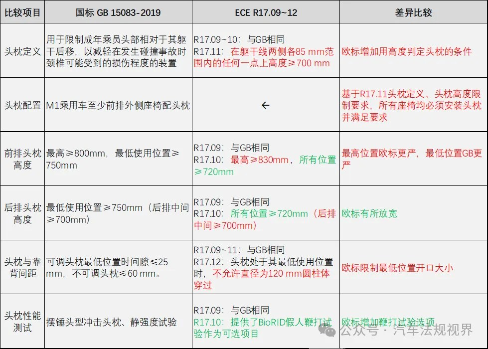
[010]
版本演变要点10条
- GB 15083新版意见稿①头枕定义:量化「视为具有头枕」判定——距躯干基准线两侧85mm两竖直纵向平面间任一点高度≥700mm即视为头枕(2019版仅按限制头部后倾的功能定性),便于工程量化校核。 [004]
- GB 15083新版意见稿②鞭打试验:新增适用于设计速度16–20km/h的鞭打试验(基于BioRID II假人,即等效鞭打试验)作为测试选项;伤害指标与ECE R17保持一致,但与C-NCAP评分体系差异较大(2019版无此项)。 [004]
- GB 15083新版意见稿③头枕高度:前排头枕任一位置提至≥830mm(2019版前排≥800mm、其他≥750mm),并新增后排各位置头枕高度≥720mm要求——前排外侧加严、后排补齐。 [004]
- GB 15083新版意见稿④头枕与靠背间隙:改为四块区域内直径50mm球不能穿过、前排外侧头枕间隙<45mm(2019版仅可调头枕因结构限制≤25mm、固定头枕无要求),收紧挖孔/间隙。 [004]
- GB 15083新版意见稿⑤头枕高度使用位置:要求驾驶员头枕处于最高使用位置时向下移动量≤25mm,防止头枕长期停在过低位置,保护头部(2019版在750mm以上无「使用位置」概念)。 [004]
- GB 15083新版意见稿⑥头枕自动回位:要求各座椅满足「头枕可自动调到使用位置」或靠背前折滑移后头枕下边缘高度540–460mm等条件之一(2019版靠背调节后头枕无自动回位要求),充分发挥头枕功能。 [004]
- GB 15083新版意见稿⑦零重力座椅:新增对零重力座椅的安全要求(对应「全球首个整车零重力座椅安全法规」,详见前文),2019版无。 [004]
- GB 15083新版意见稿⑧电动防夹:新增电动座椅在调节过程中的防夹保护要求,2019版无。 [004]
- GB 15083新版意见稿⑨假人模型:更关注假人实际性能试验,改用计算的力转移到H点的方式(2019版对安全固定点全直接转移情况可用等效力的前端碰撞代替性能试验)。 [004]
- GB 15083新版意见稿过渡期预测:新申请型式批准的M/N1类2028-01-01起执行、已获批2028-07-01;新申请N2/N3类2028-07-01起、已获批2029-07-01。
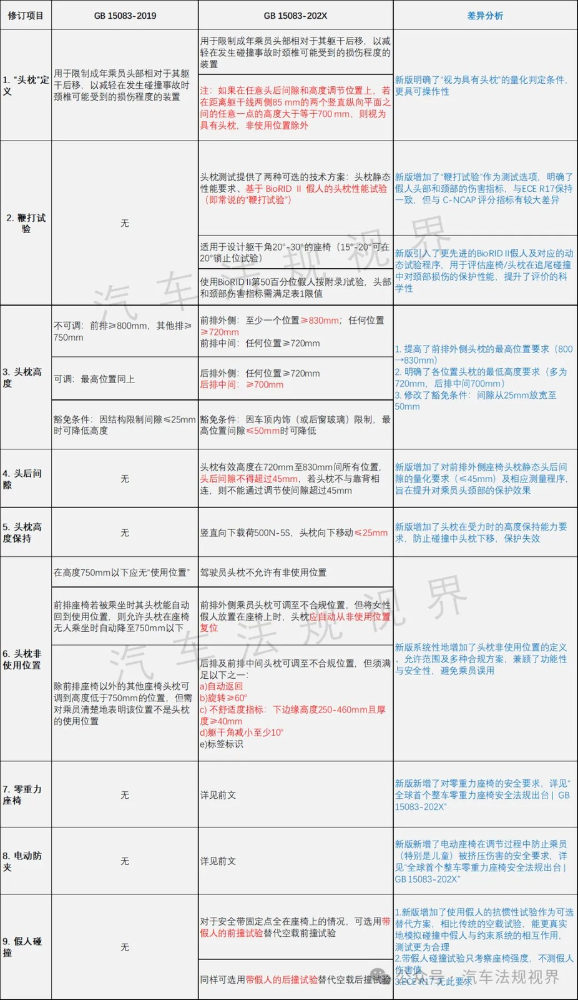
[004]
来源推文:修订|GB 15083 座椅安全法规升级(新版意见稿):头枕加严、零重力座对比|汽车座椅法规升级比较 | GB 15083 与 ECE R17.12
⚠ 知识缺口:法规库待补充:GB 15083、GB 15083-2019
灯光与信号 整车准入1 篇
UN ECE
UN Regulation No. 48 库1篇
版本演变要点3条
来源推文:修订|自动近光灯法规修订分析 | UN R48.8
⚠ 知识缺口:暂无中国侧解读/对照
视野与HUD 整车准入2 篇
中国
GB/T 46926-2025 缺2篇GB 11562-2025 缺2篇
UN ECE
UN Regulation No. 176 库2篇UN Regulation No. 125 库1篇
条文解读要点13条
- GB/T 46926-2025《轻型汽车视野辅助系统技术要求及试验方法》是国内首个车载HUD(FVA视野辅助)国家标准,修订参考UN R176,其主要条款将作为GB 11562-2025的配套标准强制实施。 [008]
- 区域划分:GB/T 46926-2025将前视野重新划分为区域1(上部)与区域2(下部),不再沿用GB 11562-2025/UN R125以-1°固定角度定义的S区;区域1/2分界向下偏角x=arctan(h/70)取决于驾驶员眼点垂直距离h,区域2下限为前风窗不透明遮挡区域(实心或点状丝网印刷,不含仅降低透光率区域)的最高上沿。
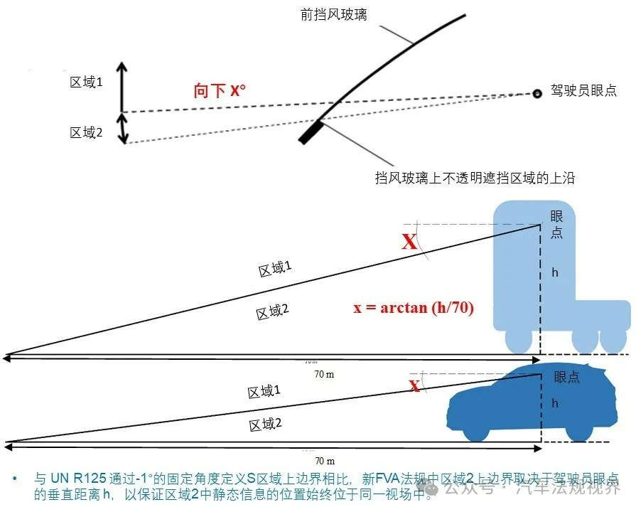
[008] - 信息类型:GB/T 46926-2025规定区域1只能显示非静态信息(维持条件消失时对应符号图形应消失),区域2可显示静态+非静态信息。
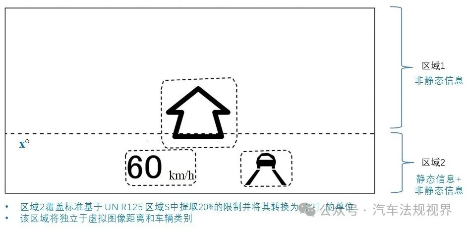
[008] - 覆盖限制:区域1最大不透明像素≤FVA显示区域50%且基本图形内覆盖率≤50%(双50%防多目标高亮堆积);区域2不透明像素面积≤66平方度,或满足区域1双50%,或符合GB 11562-2025/UN R125的S区障碍投影≤20%。 [008]
- 显示内容:HUD信息应与驾驶或操作相关(停车及UN R157自动驾驶状态豁免,接管请求发出后500ms内无关信息须消失;来电可显示);HUD可复制其它GB&UN法规强制显示信息但不是替代关系,强制信息必须保留在仪表或中控屏;符号样式可参考UN R121与ISO 2575但不强制。 [008]
- 人机与安全:GB/T 46926-2025要求自动+手动亮度调节,眼盒垂直尺寸<120mm须有眼盒高度调节;制造商须按GB/T 34590(ISO 26262)与ISO 21448(SOTIF)提供HUD防分心/防遮挡的安全分析记录;驾驶员关闭显示后≤1s生效,手动关闭最多两个连续步骤。 [008]
- PHUD(全景抬头显示,风挡底部黑色涂层近场投影)不在GB/T 46926-2025「显示在前方视野透明区域」的FVA定义内,不受新规限制。 [008]
- GB 11562-2025《轻型汽车驾驶员前方视野要求及测量方法》替代执行十余年的2014版:新车型2027-01-01、在产车2028-01-01实施;修订参考UN R125前方视野与UN R176视野辅助FVA法规。 [015]
- GB 11562-2025最大变化:提出车载HUD强制技术规范——准许风窗玻璃透明区被HUD信息覆盖,但HUD须满足GB/T 46926-2025第4章;HUD相关新增要求延期一年实施(新车型2028-01-01、在产车2029-01-01)。 [015]
- GB 11562-2025前方180°直接视野要求一(透明区基准点):风窗玻璃透明区(透光率≥70%)应至少包括6个风窗玻璃基准点(V1/V2点向前偏上7°/偏左17°/偏下5°等)。
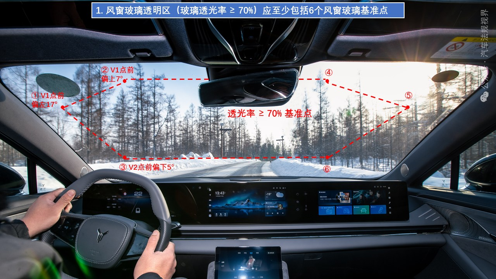
[015] - GB 11562-2025前方180°直接视野要求二(A柱):每台车不应多于两根A柱,且每根A柱双目障碍角≤6°。
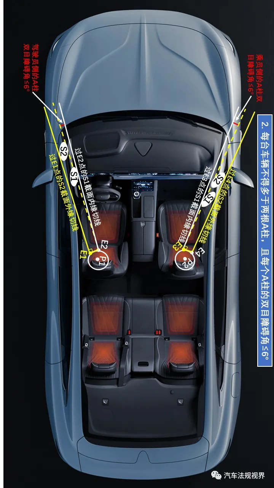
[015] - GB 11562-2025前方180°直接视野要求三(障碍物):前视野180°范围内障碍物规定,含方向盘高度要求、「S」区域障碍投影≤20%、HUD遮挡等。
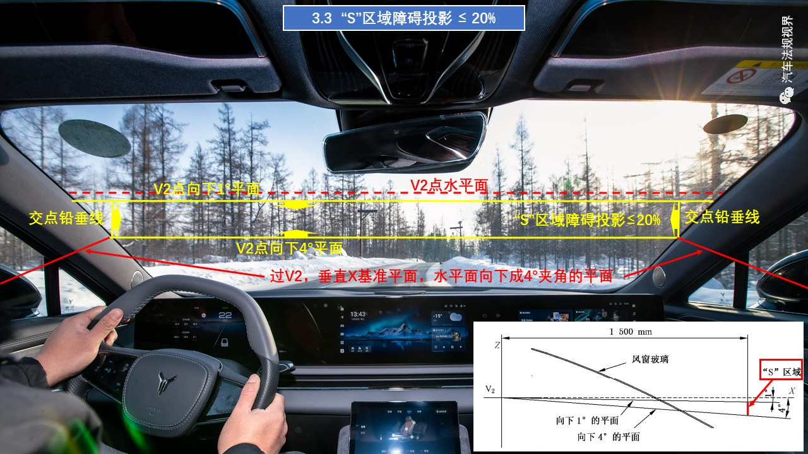
[015] - GB 11562-2025新增高坐姿(V2点离地>1650mm)车辆视野要求:车前限定空间(300mm宽横向区域)内高1200mm、直径300mm圆柱体应至少部分可见(A柱/刮水器/方向盘盲点除外),以降低盲区。 [015]
来源推文:解读|国内首个车载HUD法规正式发布：区域1和区域2要求详解解读|驾驶员前方视野校核指南 | GB 11562-2025
⚠ 知识缺口:法规库待补充:GB 11562-2025、GB/T 46926-2025
转向系统 整车准入 · ADAS4 篇
中国
GB 11557-2026 缺1篇
UN ECE
UN Regulation No. 12 库1篇UN Regulation No. 79 库3篇
跨国对照要点10条
- R79(ADAS/L1-2)驾驶员全责；R171(DCAS/L2+,2024-01生效)系统持续横纵向控制但责任不转移；R157(ALKS/L3)系统激活期间车企担责。 [020]
- DMS差异：R79强制Hands-on，R171增加Eyes-on双重监控，R157转为驾驶员可用性检测(可脱手脱眼)。 [020]
- R157速度上限从初版60km/h提至修订版130km/h；变道从R79驾驶员强制发起到R157全自主决策。 [020]
- 统一安全底线：驾驶员介入覆盖力矩均不超过50N；R157强制DSSAD数据存储与MRM最小风险策略。 [020]
- 法规空白:R171出现前欧洲只有基础转向辅助R79,管不了能自动变道/超车的高阶L2(NOA/领航);R171把超出传统辅助边界的功能(B2/C/D/E-ACSF类别)统一纳入技术中立框架。 [037]
- R171核心红线:① 责任不转移——DCAS(驾驶员控制辅助系统)只是「协助」,出事驾驶员仍是第一责任人;② 监控是刚需——系统边界/驾驶员参与度/防滥用/HMI 都写进法规本体,非车企自定。 [037]
- R171 版本时间表:R171.00(原始版,已生效起点);R171.01(新基线,增自主变道E-ACSF、接管请求HOR,2027年9月起新申请可能不再接受00版,现立项须瞄01版);R171.02(草案已提交未生效,仅作架构预埋)。 [037]
- 路径A·R171正门(技术成熟、求全欧无障碍销售):宝马iX3(德国KBA,全球首张R171,高速辅助130km/h Hands-off需视线确认变道);路特斯Eletre(西班牙IDIADA E9,中国首张、R171.01,计划2026-06 OTA高速领航HNP)。 [037]
- 路径B·Article 39侧门(技术不符现行法规时单国临时合法、再求欧盟互认):特斯拉FSD Supervised(荷兰RDW批准,仅荷兰有效,预计2026夏提交欧盟投票);福特BlueCruise(同样一国先行再扩张)。 [037]
- 出海建议:2026-2027全欧卖车,R171.01是必拿硬通货(勿再用00版做设计地板,否则2027后认证失效风险);超R171.01边界的激进功能(如城市NOA)可学特斯拉先用Article 39在一国落地、积累数据反哺R171.02。 [037]
版本演变要点9条
- GB 11557-2026《防止汽车转向机构对驾驶员伤害的规定》正式发布;过渡期:新批准M1类及<1500kg的N1类/多用途货车2027-01-01执行、已获批2029-01-01;≥1500kg的N1类顺延一年(2028/2030-01-01)。 [011]
- GB 11557-2026保留165mm球体接触部位圆角半径≥2.5mm要求;装安全气囊且球体接触部分无尖棱即符合;新增对凸出部件防挂钩及正常行驶不妨碍驾驶的要求。 [011]
- GB 11557-2026正碰试验车速调整为与UN R12一致(GB 11557-2011为49–51km/h,UN R12为48.3–53.1km/h);人体模块撞击速度24.1–25.3km/h。 [011]
- GB 11557-2026新增人体模块重心位置规定(距顶部551.2±6mm,UN R12无此要求);电安全升级为符合GB/T 31498的全面高压安全要求(含REESS),正碰后防触电/电解液泄漏(GB 11557-2011仅传统燃油泄漏类要求)。 [011]
- GB 11557-2026新增安全气囊展开时禁止硬质飞溅物(金属/塑料)要求,并增加转向盘轮缘上端无支撑区域的特定试验撞点;第7章增加同一型式判定。12个变化点全表如下。
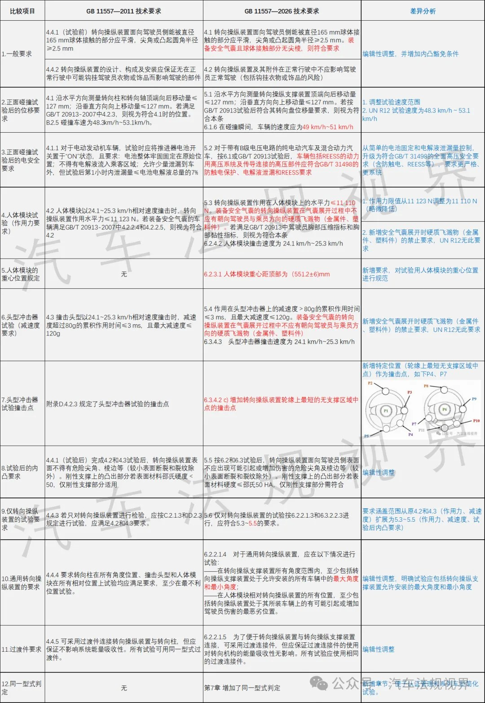
[011] - 79-04 Revision 5正式认可无机械连接的线控转向系统，将ADASS纳入规范，要求驾驶员始终保留首要控制权。 [018]
- 误区1：DLC变道对应ACSF C类，仅能在行人/骑行者禁行、有物理隔离带、车道数≥2的道路启用。 [018]
- 误区2：LKA对应ACSF B1类，横向加速度限值M1/N1≤3m/s²、M2/M3/N2/N3≤2.5m/s²，并有0.3m/s²及2秒40%宽容。 [018]
- 误区3：法规不强制全冗余，附录6给出3种故障安全设计路径；但线控/全动力转向有强制故障性能要求。 [018]
来源推文:修订|汽车转向防伤害法规升级，12个变化点详解 | GB 11557-20修订|UN R79 转向法规：车企准入合规要点与常见误区对比|联合国法规UN R79/R171/R157对比学习对比|欧洲高阶智驾「通关」指南:R171是正门,第39条是VIP快速通道
⚠ 知识缺口:法规库待补充:GB 11557-2026
车内操控与标识 整车准入 · 标签标识1 篇
中国
GB 4094 缺1篇
UN ECE
UN Regulation No. 121 库1篇
跨国对照要点5条
- 背景:GB 4094修订稿(规定19个汽车实体开关与66个强制标志)发布后,与UN R121的中欧法规差异进一步扩大。 [006]
- 标志图形差异:GB 4094修订稿与UN R121对前照灯手动调光、倒车灯、转向信号灯、危险警告灯、风窗刮水/洗涤等标志的图形、装置类别(操纵件/指示器/信号装置)及点亮颜色规定不一致(对照表节选)。
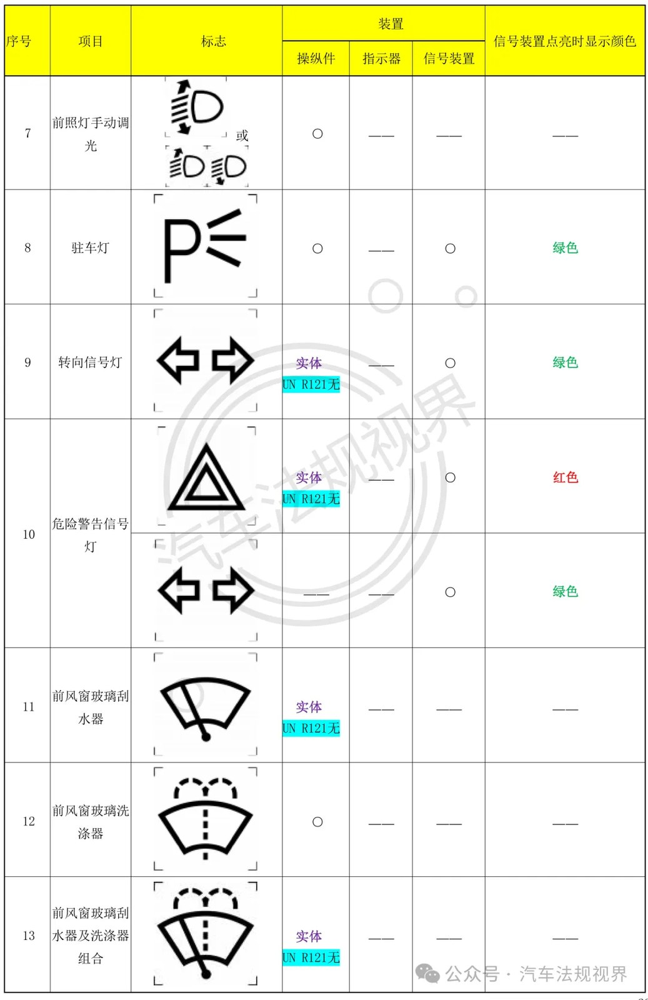
[006] - 标志背光差异:UN R121要求危险警告灯、雨刮、除霜除雾、空调风扇、发动机停止、ESC、SOS等操纵件在位置灯开启时点亮背光(地板/副仪表/转向盘/转向柱/窗框上的操纵件豁免),燃油表、机油表、车速表等指示器在发动机启动且位置灯开启时点亮;GB 4094无背光要求,仅要求标志相对底色清晰可辨且永久保持。 [006]
- 标志颜色差异:红黄绿蓝之外的通用颜色,GB 4094允许使用与背景色差明显的白色或黑色,UN R121引用ISO 2575:2004只允许白色。 [006]
- 标志修改原则差异:GB 4094允许在标志附近增加数字/字母/文字/动画辅助信息,可调整线条粗细、图形比例、弧度、导角并对轮廓/虚实着色;UN R121不允许此类修改。 [006]
来源推文:对比|车内开关与信号装置的中欧法规差异详解｜2026版
⚠ 知识缺口:法规库待补充:GB 4094
车门与逃生 整车准入1 篇
中国
GB 48001-2026 缺1篇
条文解读要点7条
- GB 48001-2026《汽车车门把手安全技术要求》正式发布,核心是保证碰撞/热扩散等事件后车门仍可被机械开启逃生。 [003]
- 车门外把手:每个车门(不含背门)应配备机械释放外把手,在电子锁止状态下、发生不可逆约束装置展开或动力电池热扩散等事件后,能不借助工具通过机械外把手开门;外把手任意状态相对车身表面须具备放置规定尺寸模块的手部操作空间——即禁用全隐藏式外门把手。 [003]
- 车门内把手:每个车门(不含背门)至少配一个机械释放内把手(断开动力电池与低压辅助蓄电池后仍能开门);至少一个机械内把手应易识别、无遮挡,位于车门或距车门边缘300mm内、纵向中心在R点前方且垂向中心在R点上方0–680mm区域;配多个内把手时任一独立操作均能开门。 [003]
- 标志要求:车门内把手应配尺寸≥10mm×7mm的提示标志,机械内把手标志旁还须增加开启方式说明(中文或图示高度≥6mm,传统直柄/环式/竖柄式除外);标志不可遮挡、与背景对比鲜明、夜间清晰可见。 [003]
- 电释放车门安全(不含尾门):发生不可逆约束装置展开时电释放外把手应保持至少5s功能抑制;断电后须能用机械外把手开门;验证含静态试验(约束展开后70±5ms内断低压供电,1min后断其他低压辅助供电,5min后能开门)与动态正碰滑车试验(30±5ms注入触发、100±5ms断低压供电)两种方式。 [003]
- 强度要求:外把手施加500N、非电子按钮式内把手200N、电子按钮式内把手50N,各保持≥5s后应能开门且不断裂脱落。 [003]
- 实施:新车型2027-01-01起;禁用全隐藏式外门把手(第②条)延期一年至2028-01-01;在产车2029-01-01前完成整改(如全隐藏式改固定/半隐藏式、电释放车门增加冗余电源)。 [003]
来源推文:解读|GB 48001-2026《汽车车门把手安全技术要求》全文公开及解读
⚠ 知识缺口:法规库待补充:GB 48001-2026; 暂无国际侧(UNECE/欧盟/美标)对照
外廓尺寸与凸出物 整车准入2 篇
中国
GB 1589 缺1篇
版本演变要点4条
- GB 1589《汽车、挂车及汽车列车外廓尺寸、轴荷及质量限值》修订意见稿(工信部发布),针对行业关心的车辆尺寸测量大幅修订,新增车外雷达、摄像头及其支架的尺寸豁免。 [002]
- 长度测量豁免:超出车辆前/后端≤50mm、边角圆角半径≥5mm且不具备载货功能的装置不计入长度,含刮水器/洗涤器、外部标识、灯光信号与反光标识、防撞胶块、外部遮阳、锁止/铰链/手柄/开关/紧固件,以及监视探测辅助装置及其支架(如雷达、摄像头)、车对车/车对基础设施通信天线等。 [002]
- 宽度测量豁免:单侧超出≤50mm、圆角半径≥5mm且不具备载货功能的传感器类等装置不计入宽度;雷达/摄像头按布置位置区分豁免条件——安装高度<2m或≥2m但位于驾驶员眼点之后,单侧外伸≤50mm;高于2m且位于眼点之前,凸出宽度不超过后视镜外伸量(可折叠则按伸出/折叠状态分别对应)。 [002]
- 高度测量豁免:仅天线的软质部分不计入车辆高度测量范围。 [002]
条文解读要点5条
- 凸出物法规本质:限制车内、外几乎所有凸出平面零件的硬度或圆角半径,避免碰撞事故中锋利零部件对行人或乘员造成二次伤害;是整车开发涉及领域最广的校核项目(白车身、内外饰、座椅、电子电器、底盘、智驾等)。 [013]
- 校核流程:准确解读法规筛选出需满足要求的车身结构/零部件→3D图纸测量+CAE模拟分析→合规判定,避免理解错误或遗漏导致后期设计变更与成本浪费。 [013]
- 适用标准体系:内、外凸物涉及GB 11552-2009(乘用车内部凸出物)、GB 11566-2024(外部凸出物)、GB 15083-2019(座椅/头枕/靠背)、GB 15084-2022(后视镜及CMS)等。 [013]
- 内部凸出物主要规定(按区域分档):顶盖「H」点以上区域、基准区、仪表板及内饰件等各有凸出高度/圆角半径/吸能要求,典型如圆角半径>2.5mm、直径50mm/165mm球体接触面要求,部分件可豁免或要求吸能。
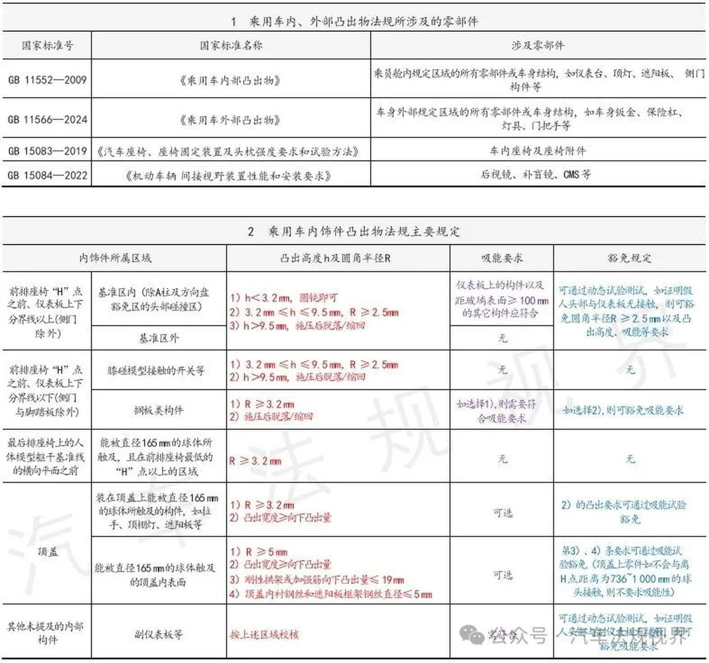
[013] - 外部凸出物主要规定(按部位分档):一般外表面凸出件圆角半径≥2.5mm、突出高度限值,前照灯/雨刮/天线/车牌/CMS等特殊件各有专项凸出高度与豁免规定。
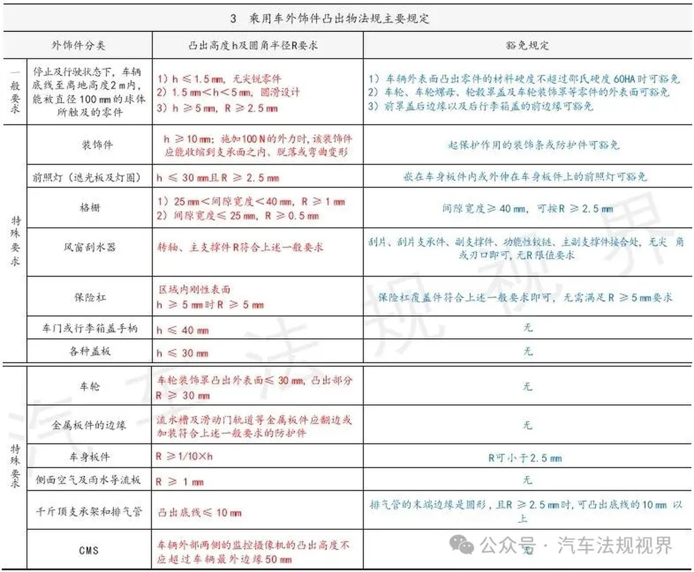
[013]
来源推文:修订|GB 1589 修订解读：增加车外雷达、摄像头及其支架的尺寸豁免解读|车辆内、外部凸出物法规要求研究
⚠ 知识缺口:法规库待补充:GB 1589; 暂无国际侧(UNECE/欧盟/美标)对照
车速与里程表 整车准入 · 网络安全1 篇
中国
GB 15082-2026 缺1篇
UN ECE
UN Regulation No. 39 库1篇
跨国对照要点4条
- GB 15082-2026相比08版增加摩托车车速表、电子数字式车速表及底盘测功机试验。 [014]
- GB 15082与UN R39主要内容一致，但未引入UN R39.2里程表要求。 [014]
- UN R39.2要求里程表纳入符合UN R155的网络安全管理体系。 [014]
- 实施：GB新车型2027-07-01起；UN R39.2新车型2028-09-01起。
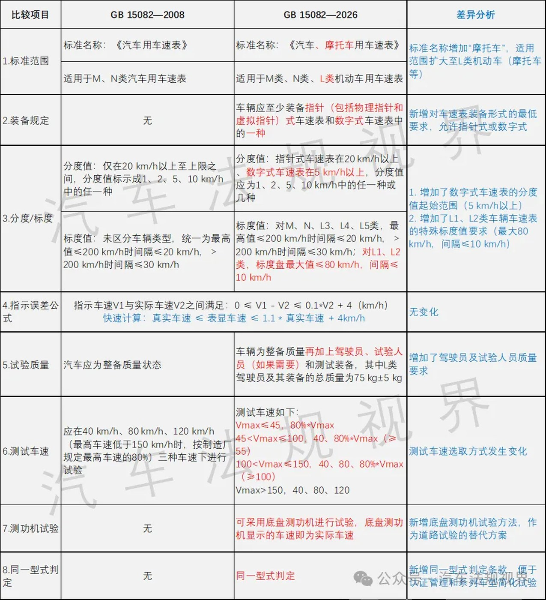
[014]
来源推文:对比|车速/里程表法规修订解读 | GB 15082-2026 与 UN
⚠ 知识缺口:法规库待补充:GB 15082-2026
应急轮胎与TPMS 整车准入 · 射频认证1 篇
UN ECE
UN Regulation No. 64 库1篇UN Regulation No. 141 库1篇
条文解读要点6条
- UN R64(Rev.2,2018-05公布;Amend.1,2020-01公布)对应车辆应急轮胎及配套系统,仅适用M1/N1类,核心是轮胎失效时为车辆提供基础支撑/驱动/转向/制动,确保驾驶员有足够时间到达维修站。 [017]
- UN R64核心设备分三类:临时备用装置(Temporary-use spare unit,非与原车参数一致的标准备胎,分Type 1–5)、防爆胎及系统(Run-flat,缺气可行驶)、EMT(Extended Mobility Tyre,修订版新增的防爆胎);配套警告系统为防爆胎警告系统(RFWS)或符合UN R141的TPMS。 [017]
- UN R64临时备用装置设计要求:Type 1–3最高设计时速80km/h、负载能力≥车辆最高轴荷1/2;Type 4最高120km/h、可自选80或120km/h限速;Type 5为日常正常行驶的防爆胎轮组、应急缺气时按临时装置执行;存储缺气状态装置须配套10分钟内充至应急压力的充气设备。 [017]
- UN R64防爆胎/系统:缺气状态(0–70kPa)须在80km/h下至少行驶80km并维持基本轮胎功能,轮胎须强化设计(如加强胎侧);EMT:缺气(0kPa)80km/h至少行驶80km且无需额外组件,采用径向充气设计。 [017]
- UN R64标识要求:Type 1–3/5轮毂外表面永久标注「MAX 80km/h(或50mph)」(字母高≥5mm、数字高≥20mm),Type 4标注80或120km/h;英制单位国家额外标英制限速;轮毂/轮胎须有独特颜色或花纹且不被轮盖遮挡;并标注轮辋尺寸、载重等级、速度等级,偏距不同时特别注明。 [017]
- UN R64配套系统:RFWS工作速度40km/h至最大设计时速,缺气时≤5分钟以黄色光学信号报警,系统故障触发黄色故障信号(可与缺气报警复用,故障时先闪后常亮);车辆已装符合UN R141的TPMS可免装独立RFWS。测试项含制动与偏移测试、RFWS测试、EMT专项测试。 [017]
来源推文:解读|【泰测 | 认证知识】UN R64法规：车辆应急轮胎及配套系统简析
⚠ 知识缺口:暂无中国侧解读/对照
制动系统 整车准入3 篇
UN ECE
UN Regulation No. 13 库2篇
南非
NRCS LOC / SABS·SANS 缺1篇
版本演变要点7条
- UN R100.04首次将装有REESS的O类电动挂车纳入监管，对M2/M3/N2/N3商用车高压警告标签规定强制张贴位置；附件9C机械冲击测试针对挂车低速工况采用特定低G值曲线。 [016]
- UN R13附件15修改单针对M3/N3制动衬垫替换件惯性测功机程序补丁修订，II型测试明确6%或7%下坡坡度。 [016]
- GB 38031-2025（2026-07-01执行）热扩散从报警后5分钟不起火向不限时演进，新增底部球击/刮底测试，判定加码监测烟气毒性及高压拉弧。 [016]
- 79-04 Revision 5正式认可无机械连接的线控转向系统，将ADASS纳入规范，要求驾驶员始终保留首要控制权。 [018]
- 误区1：DLC变道对应ACSF C类，仅能在行人/骑行者禁行、有物理隔离带、车道数≥2的道路启用。 [018]
- 误区2：LKA对应ACSF B1类，横向加速度限值M1/N1≤3m/s²、M2/M3/N2/N3≤2.5m/s²，并有0.3m/s²及2秒40%宽容。 [018]
- 误区3：法规不强制全冗余，附录6给出3种故障安全设计路径；但线控/全动力转向有强制故障性能要求。 [018]
体系背景3条
- 四机构分工:立法=交通部(DoT)+贸工部(DTI/DTIC);核心执行=国家强制性技术规范管理局(NRCS,型式批准/MIBS市场监督/发证);标准=南非国家标准局(SABS,SABS/SANS 系列);实验室认可=SANAS(认可 ISO/IEC 17025 实验室,仅其认可实验室报告被 NRCS 接受)。 [029]
- 整车型式批准六步:①制造商在南非完成 MIB 注册并提交申请→②NRCS 资料审核→③协商样车检验时间/地点(可选国内 SANAS 认可实验室或南非本土)→④实车全项检验与整改→⑤NRCS 发《符合性证书》LOC(有效期3年)→⑥信息录入南非国家交通信息系统 NaTIS 获合法身份。 [029]
- 四大关键要求:测试报告须 SANAS 认可实验室在认可范围内出具;严查实车与文件一致性(杜绝'纸车不符');获证后每年生产一致性抽检,不合格 NRCS 可收回证书;车辆须贴合规符合性铭牌(持证人/认证编号/VIN)。 [029]
来源推文:修订|2025年度汽车法规全景拆解：UN R100.04与GB 38031修订|UN R79 转向法规：车企准入合规要点与常见误区体系|南非汽车认证:NRCS 型式批准六步 + SABS/SANAS 闭环
⚠ 知识缺口:法规库待补充:NRCS LOC / SABS·SANS; 暂无中国侧解读/对照
动力电池安全 充电电池5 篇
中国
GB 38031-2025 缺2篇GB 38031 缺1篇GB 31241 缺1篇
UN ECE
UN Regulation No. 100.04 库1篇UN Regulation No. 100 库1篇UN Regulation No. 100.05 库1篇
印度
IS 16893 缺1篇
联合国(运输)
UN 38.3 缺1篇
IEC
IEC 62133 缺1篇
美国/北美
UL 2271 缺1篇UL 2580 缺1篇
跨国对照要点10条
- AIS 156(印度):EV电池包强制性安全标准,测试项含热传播、振动、冲击、防水、过充与电气滥用;是印度电动两轮/三轮/四轮车型准入的电池安全门槛。 [022]
- UN 38.3(全球运输):锂电池国际运输强制标准,八项测试为高度模拟、热循环、振动、冲击(T1–T4)、外部短路、挤压/冲击、过充、强制放电;无UN38.3报告无法空运/海运锂电池。 [022]
- IEC 62133:消费电子与工业用可充电锂(及镍系)电池/电池组的国际安全基准,是多国认证(含IS 16893)与CB体系的技术母本。 [022]
- IS 16893 / BIS(印度):对应IEC 62133的印度国家标准,锂电芯与电池组须经BIS强制注册(CRS)方可在印销售。 [022]
- GB 38031(中国):电动汽车动力电池系统安全要求,核心为热扩散(热失控触发后≥5分钟报警)、机械与电气滥用;GB 31241(中国):便携式电子产品用锂离子电池/电池组安全。 [022]
- UL 2271 / UL 2580(北美):UL 2271针对轻型电动车(LEV)电池系统,UL 2580针对电动汽车电池组,北美市场广泛采信,覆盖电、机械、环境与滥用安全。 [022]
- GB 38031-2025《电动汽车用动力蓄电池安全要求》2026-07-01 起实施,对电池安全性能全面升级。 [038]
- GB 38031-2025 热失控要求(单体发生热失控后):5min 内提供热事件报警信号 → 5min 内烟气不导致乘员舱发生危险 → 2h 内不起火、不爆炸。 [038]
- 国际侧:UN ECE R100《电动动力车辆》最新 05 系列版本新增大量电池热扩散规定,提出详细的热扩散测试方案与流程。 [038]
- 中欧显著差异:① 测试方案——实测 vs 文审;② 测试级别——整车 vs REESS(可充电储能系统);③ 合规判定方式不同。企业应全面考量各目标市场法规差异,避免方案反复造成损失。 [038]
版本演变要点8条
- GB 11557-2026《防止汽车转向机构对驾驶员伤害的规定》正式发布;过渡期:新批准M1类及<1500kg的N1类/多用途货车2027-01-01执行、已获批2029-01-01;≥1500kg的N1类顺延一年(2028/2030-01-01)。 [011]
- GB 11557-2026保留165mm球体接触部位圆角半径≥2.5mm要求;装安全气囊且球体接触部分无尖棱即符合;新增对凸出部件防挂钩及正常行驶不妨碍驾驶的要求。 [011]
- GB 11557-2026正碰试验车速调整为与UN R12一致(GB 11557-2011为49–51km/h,UN R12为48.3–53.1km/h);人体模块撞击速度24.1–25.3km/h。 [011]
- GB 11557-2026新增人体模块重心位置规定(距顶部551.2±6mm,UN R12无此要求);电安全升级为符合GB/T 31498的全面高压安全要求(含REESS),正碰后防触电/电解液泄漏(GB 11557-2011仅传统燃油泄漏类要求)。 [011]
- GB 11557-2026新增安全气囊展开时禁止硬质飞溅物(金属/塑料)要求,并增加转向盘轮缘上端无支撑区域的特定试验撞点;第7章增加同一型式判定。12个变化点全表如下。 [011]
- UN R100.04首次将装有REESS的O类电动挂车纳入监管，对M2/M3/N2/N3商用车高压警告标签规定强制张贴位置；附件9C机械冲击测试针对挂车低速工况采用特定低G值曲线。 [016]
- UN R13附件15修改单针对M3/N3制动衬垫替换件惯性测功机程序补丁修订，II型测试明确6%或7%下坡坡度。 [016]
- GB 38031-2025（2026-07-01执行）热扩散从报警后5分钟不起火向不限时演进，新增底部球击/刮底测试，判定加码监测烟气毒性及高压拉弧。 [016]
体系背景4条
- 巴西非1958协议/WP29成员，ECE法规无自动法律效力，测试报告须明确满足对应CONTRAN标准。
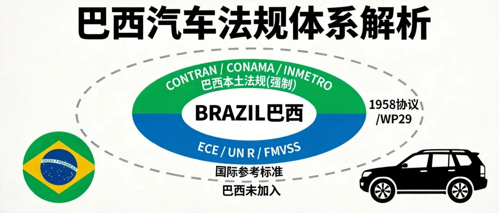
[019] - 安全法规以CONTRAN决议为核心但大量借鉴ECE(如CONTRAN 721/2018基于UN R95侧碰)；排放PROCONVE轻型车用美标FTP-75、重型车对标欧标。 [019]
- SENATRAN 990/2022起等效ECE/FMVSS不再被接受除非CONTRAN明确提及；新能源CONTRAN 749/2018认可UN R100/R94/R95或FMVSS 305。 [019]
- 实操：已有欧盟WVTA不能直接用需逐项比对；零部件(轮胎/玻璃/蓄电池)必须做INMETRO认证。 [019]
来源推文:修订|汽车转向防伤害法规升级，12个变化点详解 | GB 11557-20修订|2025年度汽车法规全景拆解：UN R100.04与GB 38031体系|巴西认证为何混合联合国、美国法规？ECE、UN R、CONTRAN与对比|全球电池认证标准速览:印度/中国/北美/国际六大锂电池安全合规标准｜对比|中欧动力电池热失控法规差异详解:不起火、不爆炸
⚠ 知识缺口:法规库待补充:GB 31241、GB 38031、GB 38031-2025、IEC 62133、IS 16893、UL 2271、UL 2580、UN 38.3
电池护照与标识 充电电池 · 标签标识1 篇
中国
动力蓄电池标牌标签及电子标识(征求意见稿) 缺1篇
欧盟
EU 2023/1542 库1篇
跨国对照要点5条
- 背景:欧盟(EU) 2023/1542《电池与废电池法规》要求自2027-02-18起电动汽车动力电池须持电池护照,公众/监管机构/利益相关方经二维码分级访问制造商、材料成分、碳足迹、可回收材料、供应链等全生命周期数据。 [007]
- 中国对标:国标《道路车辆 动力蓄电池产品标牌标签及电子标识的信息》征求意见稿提出中国版电池护照——电池包标牌/标签至少含制造商名称、动力蓄电池编码、尺寸≥10mm×10mm的电子标识二维码。 [007]
- 中国版电子标识信息分三类:电池包基础信息、性能与安全信息、可持续发展信息;访问权限按公众 / 产业链利益相关方(电芯/电池包/整车制造商、检测、换电、维修、再利用、回收商等) / 监管部门分级设置。
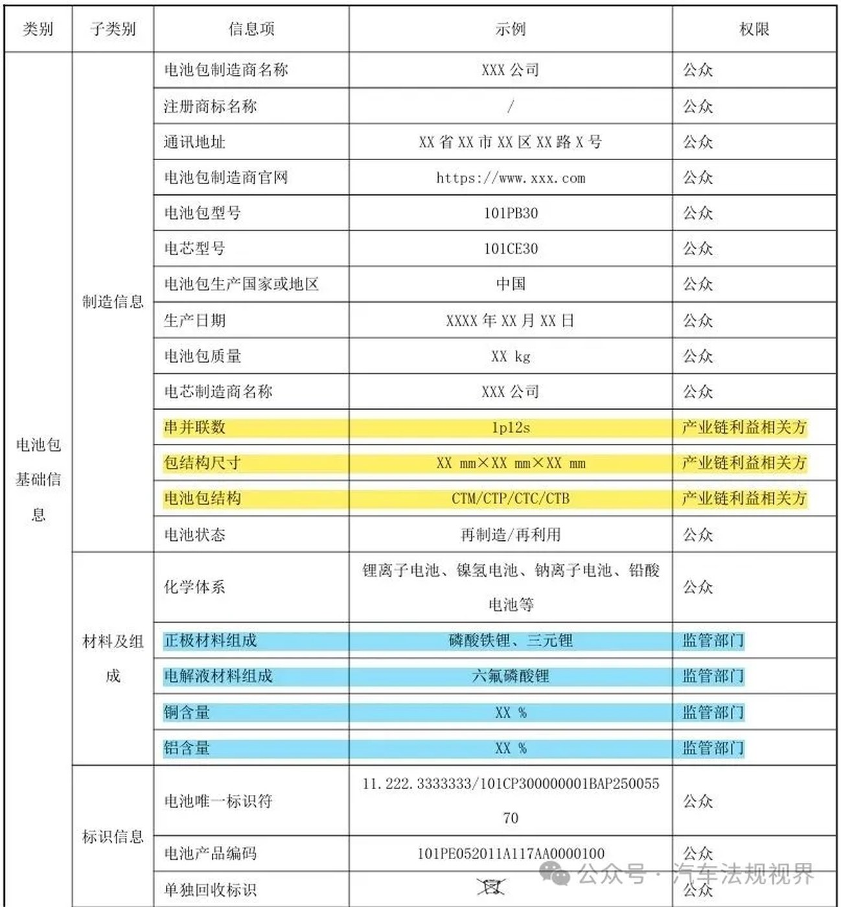
[007] - 中国版相对欧盟电池护照的删除项:①企业核心利益数据(关键原材料清单/位置/重量、正负极及电解液关键元素名称);②信息存在差异数据(设计值与实际表现不同,如最大允许放电功率、容量/功率衰减);③信息收集困难数据(过充过放/负性事件记录、超温后维持时间);④欧盟特殊需要数据(合规声明ID、合规报告等仅进欧盟市场需披露)。
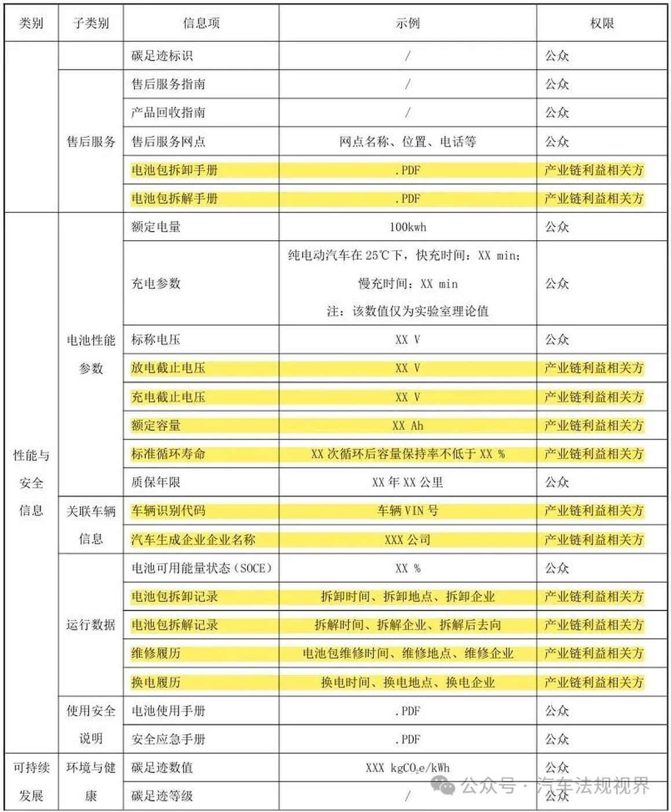
[007] - 中国版相对欧盟电池护照的增加项:⑤消费者关注数据(如电芯制造商名称);⑥国内特色数据(如额定电量、电池使用手册);⑦产业可持续发展数据(ESG年报、产品回收指南、售后服务指南);⑧全生命周期流转信息(关联车辆信息、运行履历如维修/换电/拆卸/拆解记录、回收利用)。 [007]
来源推文:对比|动力电池标牌、标签及电子标识国标解读 | 中国的电池护照
⚠ 知识缺口:法规库待补充:动力蓄电池标牌标签及电子标识(征求意见稿)
禁限用物质与化学品 环保全链条4 篇
中国
动力蓄电池标牌标签及电子标识(征求意见稿) 缺1篇GB/T 30512 道路车辆有害物质限制使用要求(征求意见稿) 缺1篇
欧盟
EU 2023/1542 库1篇
巴西
CONAMA 401/08 缺1篇
韩国
第33187-2022号总统令(K-RoHS) 缺1篇19172号法案(K-REACH) 缺1篇第33514号总统令(K-POPs) 缺1篇
跨国对照要点5条
- 背景:欧盟(EU) 2023/1542《电池与废电池法规》要求自2027-02-18起电动汽车动力电池须持电池护照,公众/监管机构/利益相关方经二维码分级访问制造商、材料成分、碳足迹、可回收材料、供应链等全生命周期数据。 [007]
- 中国对标:国标《道路车辆 动力蓄电池产品标牌标签及电子标识的信息》征求意见稿提出中国版电池护照——电池包标牌/标签至少含制造商名称、动力蓄电池编码、尺寸≥10mm×10mm的电子标识二维码。 [007]
- 中国版电子标识信息分三类:电池包基础信息、性能与安全信息、可持续发展信息;访问权限按公众 / 产业链利益相关方(电芯/电池包/整车制造商、检测、换电、维修、再利用、回收商等) / 监管部门分级设置。 [007]
- 中国版相对欧盟电池护照的删除项:①企业核心利益数据(关键原材料清单/位置/重量、正负极及电解液关键元素名称);②信息存在差异数据(设计值与实际表现不同,如最大允许放电功率、容量/功率衰减);③信息收集困难数据(过充过放/负性事件记录、超温后维持时间);④欧盟特殊需要数据(合规声明ID、合规报告等仅进欧盟市场需披露)。 [007]
- 中国版相对欧盟电池护照的增加项:⑤消费者关注数据(如电芯制造商名称);⑥国内特色数据(如额定电量、电池使用手册);⑦产业可持续发展数据(ESG年报、产品回收指南、售后服务指南);⑧全生命周期流转信息(关联车辆信息、运行履历如维修/换电/拆卸/拆解记录、回收利用)。 [007]
版本演变要点4条
- 背景:工信部 2015《汽车有害物质和可回收利用率管理要求》,2016 起 M1 按 GB/T 30512-2014《汽车禁用物质要求》;现 GB/T 30512 更名《道路车辆 有害物质限制使用要求》公开征求意见,大修管控范围/禁限物质及限值/豁免。 [052]
- 检测原则:车辆及零部件有害物质含量检测应按『尽可能拆分成均质材料』的基本原则进行。 [052]
- 限值适用范围:铅/镉/汞/六价铬限值适用所有均质材料;多溴联苯/多溴二苯醚/氯化石蜡/紫外线吸收剂 UV-328/邻苯二甲酸酯限值适用均质材料(但金属与无机非金属材料除外);石棉禁用适用非金属均质材料;多环芳烃限值适用人体直接长期接触或短期重复接触的非金属均质材料。 [052]
- 影响:对供应链零部件与材料合规开发提出更高要求,企业需及早完善禁限物质管控体系。注:征求意见稿,最终以正式发布稿为准。 [052]
条文解读要点5条
- 适用范围:所有一次/二次电池及电池组——便携干电池(碱性/碳锌/纽扣)、铅酸蓄电池(汽车/摩托/工业/UPS)、镍镉/镍氢/锂电池、汞氧化物纽扣电池、集成于设备的电池;军事航空航天专用电池豁免(需认证)。 [033]
- 重金属限值(质量分数):便携电池 Hg≤0.0005%(5ppm)/Cd≤0.002%/Pb≤0.01%;铅酸电池 Hg≤0.001%/Cd≤0.002%(铅无上限但须100%回收);镍镉 Hg≤0.0005%、Cd≤1.0%但强制回收。 [033]
- 标签:须耐久标注化学符号(Pb/Cd/Hg)、打叉垃圾桶回收标志、制造商/进口商(名称/地址/CNPJ)、生产日期批号、重金属含量声明(如'Hg<5ppm')。 [033]
- 生产者责任(EPR):须向巴西环境部 IBAMA 提交 PGRS 废旧电池管理计划并建逆向物流;回收率铅酸≥95%、镍镉≥90%、便携干电池≥60%,每年向 IBAMA 报告;进口铅酸/镍镉/汞电池须先提供检测报告+回收计划方可清关。 [033]
- 合规:须 INMETRO 认可实验室出具 Pb/Cd/Hg 检测报告,进口商保存≥5年备 IBAMA 抽查。 [033]
体系背景3条
- K-RoHS — 第33187-2022号总统令《电气、电子产品和车辆资源流通法执行令》(常称韩国RoHS):管控电子电气产品与车辆中铅、汞、镉、六价铬、多溴联苯(PBB)、多溴二苯醚(PBDE),后续新增邻苯二甲酸酯类限制;铅/汞/六价铬等限值≤0.1%,部分产品需提交合规声明或测试报告。 [024]
- K-REACH — 19172号法案《化学品注册与评估法案》(韩国化学品管理基本法,相当于韩版REACH):对在韩生产/进口/销售的所有化学物质及含化学物质产品进行全生命周期管控,要求新及现有化学物质注册评估授权、对高风险物质(石棉、铅化合物等)限制或禁用、传递化学品安全信息(SDS)。 [024]
- K-POPs — 第33514号-2023总统令《持久性污染物质控制法施行令》(对应斯德哥尔摩公约):管控持久性有机污染物(滴滴涕、多氯联苯、PFOS等)及含这些物质的产品,禁止或限制其生产、进出口和使用(明确豁免情形及期限);产品中不得含管控清单内POPs,需定期排查原材料与生产工艺避免无意引入。 [024]
来源推文:对比|动力电池标牌、标签及电子标识国标解读 | 中国的电池护照体系|韩国汽车禁/限用物质三大法规:K-RoHS(总统令33187)/ K解读|巴西 CONAMA 401/08:电池重金属限值与回收(EPR)修订|GB/T 30512 车辆禁限物质修订(征求意见稿):有害物质限制使
⚠ 知识缺口:法规库待补充:19172号法案(K-REACH)、CONAMA 401/08、GB/T 30512 道路车辆有害物质限制使用要求(征求意见稿)、动力蓄电池标牌标签及电子标识(征求意见稿)、第33187-2022号总统令(K-RoHS)、第33514号总统令(K-POPs)
智能驾驶分级(ADAS→L3) ADAS · 网络安全6 篇
中国
GB《智能网联汽车 自动驾驶系统安全要求》(拟2027-07-01实施) 缺1篇GB 44495 整车信息安全 / GB 44496 软件升级 / GB 44497 自动驾驶数据记录(2026-01-01) 缺1篇
欧盟
EU 2021/1958 库1篇EU 2019/2144 库1篇EU 2023/1675 缺1篇
UN ECE
UN Regulation No. 79 库3篇UN Regulation No. 130 库1篇UN Regulation No. 171 库2篇UN Regulation No. 157 库1篇
跨国对照要点10条
- R79(ADAS/L1-2)驾驶员全责；R171(DCAS/L2+,2024-01生效)系统持续横纵向控制但责任不转移；R157(ALKS/L3)系统激活期间车企担责。 [020]
- DMS差异：R79强制Hands-on，R171增加Eyes-on双重监控，R157转为驾驶员可用性检测(可脱手脱眼)。 [020]
- R157速度上限从初版60km/h提至修订版130km/h；变道从R79驾驶员强制发起到R157全自主决策。 [020]
- 统一安全底线：驾驶员介入覆盖力矩均不超过50N；R157强制DSSAD数据存储与MRM最小风险策略。 [020]
- 法规空白:R171出现前欧洲只有基础转向辅助R79,管不了能自动变道/超车的高阶L2(NOA/领航);R171把超出传统辅助边界的功能(B2/C/D/E-ACSF类别)统一纳入技术中立框架。 [037]
- R171核心红线:① 责任不转移——DCAS(驾驶员控制辅助系统)只是「协助」,出事驾驶员仍是第一责任人;② 监控是刚需——系统边界/驾驶员参与度/防滥用/HMI 都写进法规本体,非车企自定。 [037]
- R171 版本时间表:R171.00(原始版,已生效起点);R171.01(新基线,增自主变道E-ACSF、接管请求HOR,2027年9月起新申请可能不再接受00版,现立项须瞄01版);R171.02(草案已提交未生效,仅作架构预埋)。 [037]
- 路径A·R171正门(技术成熟、求全欧无障碍销售):宝马iX3(德国KBA,全球首张R171,高速辅助130km/h Hands-off需视线确认变道);路特斯Eletre(西班牙IDIADA E9,中国首张、R171.01,计划2026-06 OTA高速领航HNP)。 [037]
- 路径B·Article 39侧门(技术不符现行法规时单国临时合法、再求欧盟互认):特斯拉FSD Supervised(荷兰RDW批准,仅荷兰有效,预计2026夏提交欧盟投票);福特BlueCruise(同样一国先行再扩张)。 [037]
- 出海建议:2026-2027全欧卖车,R171.01是必拿硬通货(勿再用00版做设计地板,否则2027后认证失效风险);超R171.01边界的激进功能(如城市NOA)可学特斯拉先用Article 39在一国落地、积累数据反哺R171.02。 [037]
版本演变要点8条
- GB 1589《汽车、挂车及汽车列车外廓尺寸、轴荷及质量限值》修订意见稿(工信部发布),针对行业关心的车辆尺寸测量大幅修订,新增车外雷达、摄像头及其支架的尺寸豁免。 [002]
- 长度测量豁免:超出车辆前/后端≤50mm、边角圆角半径≥5mm且不具备载货功能的装置不计入长度,含刮水器/洗涤器、外部标识、灯光信号与反光标识、防撞胶块、外部遮阳、锁止/铰链/手柄/开关/紧固件,以及监视探测辅助装置及其支架(如雷达、摄像头)、车对车/车对基础设施通信天线等。 [002]
- 宽度测量豁免:单侧超出≤50mm、圆角半径≥5mm且不具备载货功能的传感器类等装置不计入宽度;雷达/摄像头按布置位置区分豁免条件——安装高度<2m或≥2m但位于驾驶员眼点之后,单侧外伸≤50mm;高于2m且位于眼点之前,凸出宽度不超过后视镜外伸量(可折叠则按伸出/折叠状态分别对应)。 [002]
- 高度测量豁免:仅天线的软质部分不计入车辆高度测量范围。 [002]
- 79-04 Revision 5正式认可无机械连接的线控转向系统，将ADASS纳入规范，要求驾驶员始终保留首要控制权。 [018]
- 误区1：DLC变道对应ACSF C类，仅能在行人/骑行者禁行、有物理隔离带、车道数≥2的道路启用。 [018]
- 误区2：LKA对应ACSF B1类，横向加速度限值M1/N1≤3m/s²、M2/M3/N2/N3≤2.5m/s²，并有0.3m/s²及2秒40%宽容。 [018]
- 误区3：法规不强制全冗余，附录6给出3种故障安全设计路径；但线控/全动力转向有强制故障性能要求。 [018]
条文解读要点10条
- 母法EU 2019/2144(通用安全法规GSR)强制ISA：2022-07起新车型、2024-07起所有新车；实施细则EU 2021/1958定技术要求，由EU 2023/1675修订(2023-09-21生效)。
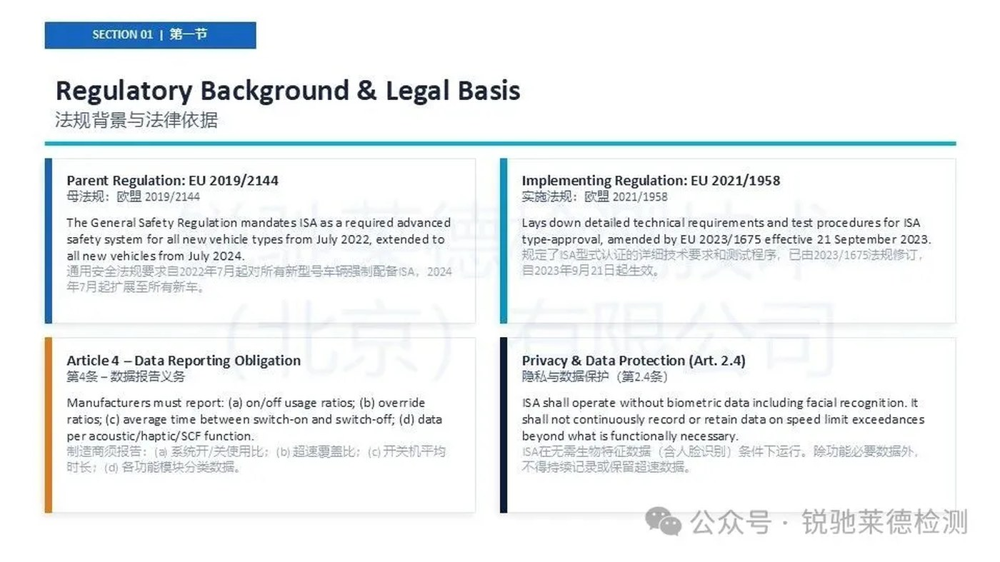
[001] - 三大功能：SLIF(限速信息)、SLWF(限速警告)、SCF(速度控制)。
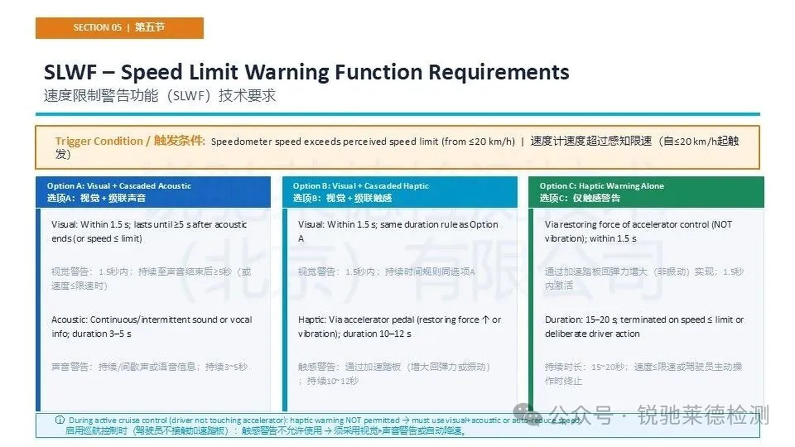
[001] - 制造商须报告：开关使用比例、超控比例、平均开关间隔、各功能数据；ISA运行不得使用含人脸识别的生物特征数据。 [001]
- 适用乘用车/轻型商用车/客车/货车；M2/M3/N2/N3装限速器+记录仪者，SLWF/SCF在限速器设定值以下9km/h挂起(除非有明确标志)。 [001]
- 适用与定位:面向载客/载货 L3/L4 高阶自动驾驶系统(自动泊车不在内);要求 ADS 安全水平至少达到『合格且专注驾驶人』类别;激活时须持续执行全部动态驾驶任务(DDT)并持续识别是否处于设计运行条件(ODC,与 ODD 密切相关),否定『跑了多少公里/覆盖多少城市/参数更大/接管率下降』式宣传。 [055]
- Safety Case 安全档案机制:以『声明(在何 ODC/ODD 内安全执行哪些任务)—论据(危害分析/SOTIF/网络安全/失效处理为何足够)—证据(仿真/场地/道路/回放/事故复盘)』结构化论证;仿真、场地、道路三类测试纳入统一验证框架并要求仿真与实车一致性。 [055]
- 三层验证:保障要求检验(安全管理体系≈SMS Audit)+ 安全档案检验(声明-论据-证据自洽≈Safety Case Assessment)+ 确认性试验(独立场景/实车验证可信度≈Credibility Assessment)。 [055]
- 中国三步监管路径:①网络信息与软件基础——GB 44495 整车信息安全、GB 44496 软件升级、GB 44497 自动驾驶数据记录(DSSAD),2026-01-01 实施;②组合驾驶辅助安全(面向 L2/L2+ 边界宣传与误用);③自动驾驶系统安全(L3/L4,把 Safety Case、安全管理、确认性试验、在用监测纳入准入)。 [055]
- 智驾安全体系七层:自动化分级与责任边界(SAE J3016/GB/T 40429-2021)、ODD 能力边界、功能安全(ISO 26262/ASIL/HARA,管硬件软件故障)、预期功能安全 SOTIF(ISO 21448,管设计/感知/场景不足与可预见误用)、网络安全(ISO/SAE 21434+UNECE R155/R156,管攻击/漏洞/OTA)、AI 模型与数据治理(漂移/偏差/对抗样本)、运营监控与事故闭环——构成可闭环可追溯的证据链。 [055]
- 全球背景:联合国 WP.29/GRVA 推进 ADS GTR、美国把 Safety Case 纳入监管语言、中国以强制性国标落到产品准入,三套体系收敛到同一范式——从被动跟随事故转向事前论证、事中监测、事后闭环。 [055]
来源推文:解读|(EU) 2021/1958 ISA 智能速度辅助系统修订|GB 1589 修订解读：增加车外雷达、摄像头及其支架的尺寸豁免修订|UN R79 转向法规：车企准入合规要点与常见误区对比|联合国法规UN R79/R171/R157对比学习对比|欧洲高阶智驾「通关」指南:R171是正门,第39条是VIP快速通道解读|中国《智能网联汽车 自动驾驶系统安全要求》强制国标(L3/L4,拟2
⚠ 知识缺口:法规库待补充:EU 2023/1675、GB 44495 整车信息安全 / GB 44496 软件升级 / GB 44497 自动驾驶数据记录(2026-01-01)、GB《智能网联汽车 自动驾驶系统安全要求》(拟2027-07-01实施)
智能网联测评·座舱·隐私 ADAS · 网络安全5 篇
中国
C-ICAP 2026 缺1篇GB《智能网联汽车 自动驾驶系统安全要求》(拟2027-07-01实施) 缺1篇GB 44495 整车信息安全 / GB 44496 软件升级 / GB 44497 自动驾驶数据记录(2026-01-01) 缺1篇
UN ECE
UN R155 库2篇UN R156 库2篇
哈萨克斯坦
TR CU 018/2011 缺1篇TR CU 018/2011 (EAC) 缺1篇
乌兹别克斯坦
UzTR.237-016:2017 缺2篇
跨国对照要点4条
条文解读要点6条
- 适用与定位:面向载客/载货 L3/L4 高阶自动驾驶系统(自动泊车不在内);要求 ADS 安全水平至少达到『合格且专注驾驶人』类别;激活时须持续执行全部动态驾驶任务(DDT)并持续识别是否处于设计运行条件(ODC,与 ODD 密切相关),否定『跑了多少公里/覆盖多少城市/参数更大/接管率下降』式宣传。 [055]
- Safety Case 安全档案机制:以『声明(在何 ODC/ODD 内安全执行哪些任务)—论据(危害分析/SOTIF/网络安全/失效处理为何足够)—证据(仿真/场地/道路/回放/事故复盘)』结构化论证;仿真、场地、道路三类测试纳入统一验证框架并要求仿真与实车一致性。 [055]
- 三层验证:保障要求检验(安全管理体系≈SMS Audit)+ 安全档案检验(声明-论据-证据自洽≈Safety Case Assessment)+ 确认性试验(独立场景/实车验证可信度≈Credibility Assessment)。 [055]
- 中国三步监管路径:①网络信息与软件基础——GB 44495 整车信息安全、GB 44496 软件升级、GB 44497 自动驾驶数据记录(DSSAD),2026-01-01 实施;②组合驾驶辅助安全(面向 L2/L2+ 边界宣传与误用);③自动驾驶系统安全(L3/L4,把 Safety Case、安全管理、确认性试验、在用监测纳入准入)。 [055]
- 智驾安全体系七层:自动化分级与责任边界(SAE J3016/GB/T 40429-2021)、ODD 能力边界、功能安全(ISO 26262/ASIL/HARA,管硬件软件故障)、预期功能安全 SOTIF(ISO 21448,管设计/感知/场景不足与可预见误用)、网络安全(ISO/SAE 21434+UNECE R155/R156,管攻击/漏洞/OTA)、AI 模型与数据治理(漂移/偏差/对抗样本)、运营监控与事故闭环——构成可闭环可追溯的证据链。 [055]
- 全球背景:联合国 WP.29/GRVA 推进 ADS GTR、美国把 Safety Case 纳入监管语言、中国以强制性国标落到产品准入,三套体系收敛到同一范式——从被动跟随事故转向事前论证、事中监测、事后闭环。 [055]
体系背景25条
- 总纲:主流认证(欧盟WVTA/欧亚EAC/海湾GCC)是基础,但中亚、北非、东欧等非联盟独立区域有国别专属强制认证——均为法定型式认证/专项强制资质(区别于PVOC一次性清关文件),是清关、上牌、销售的硬性门槛,遗漏直接导致货物滞留、项目停滞。 [023]
- 中亚·哈萨克斯坦:作为EAEU成员须满足TR CU 018/2011,取得EAC认证 + OTTC车辆类型批准书方可注册销售;申请必须指定EAEU境内实体作连带责任签约方(车企申报核心卡点)。 [023]
- 中亚·乌兹别克斯坦:完全不认可欧亚EAC,须依本国UzTR.237-016:2017标准独立完成整车全项测试与工厂审核,由UZSTANDART(标准计量与认证署)发证,且证书申请人必须为乌境内注册企业。 [023]
- 中亚·吉尔吉斯斯坦 vs 塔吉克斯坦:吉尔吉斯斯坦属EAEU、通用EAC规则;塔吉克斯坦不属欧亚经济联盟,必须单独办理GOST-TJ国家强制认证。两地测试标准老旧、审核周期漫长,立项阶段须预留充足认证周期。 [023]
- 东北亚·日本:依《道路运输车辆法》搭建型式认定体系,大量引用JIS标准,覆盖整车安全/排放/噪音/EMC全项试验,且所有车型必须完成右舵专属本地化改制——全球最严苛体系之一。 [023]
- 东北亚·韩国:KMVSS整车认证由国土交通省主管、仅本土指定代理申报;关键新规2025-08-14生效,新增Article 18-4网络安全、Article 18-5软件升级两大强制条款,新申报车型必须满足。 [023]
- 东欧·罗马尼亚:欧盟成员,量产车持有效WVTA即可在欧盟自由流通;但非欧盟来源、小批量定制、特种车辆无法直接用WVTA,须在当地完成RAR(汽车登记处)专项技术核验(VIN校验 + 整车技术审查补充备案)。 [023]
- 东欧·塞尔维亚:非欧盟国家,采用独立AAA强制合格评定体系,基准高度对标UNECE但发证机构完全独立,需单独测试与工厂审核;已纳入E/e-mark体系,专属代号E10。(克罗地亚2013年入盟,执行WVTA,不属此独立认证范畴) [023]
- 北非·阿尔及利亚:整车准入为法定强制COC符合性认证,排放不低于欧5,ABS/ESC强制标配;完全拒收GCC/EAC境外报告,必须本地试验取得官方COC,且进口商须为工业部授权的特许经销主体。 [023]
- 北非·突尼斯 & 利比亚:突尼斯实行NT国家标准认证(INNORPI主管,须过PCAP符合性评估程序);利比亚依《第12/2010号法案》执行LNCS强制认证叠加PVOC装船前检验,以UNECE为基础并增加高温沙尘专属试验项;两国均要求整车型式批准叠加年度工厂监督审核。 [023]
- 东南亚·越南:常见误区是以为东盟LCI区域互认可通用,实则越南不认可东盟互认资质,强制本土登检认证(Vietnam Register);法规等效UNECE,但所有试验必须在越南登检局授权实验室完成,严禁套用其他东盟国家数据与证书。 [023]
- 小众岛国:太平洋/加勒比(巴布亚新几内亚NICTA型式认证、牙买加、巴哈马)均为右舵专属市场、对标ADR与GCC、仅当地官方发证(巴新2025-12新规:旧永久证书有效期统一调整至2028-06-10,新证固定三年);新西兰承认澳大利亚ADR为基础准入,但到港后须完成NZTA本地备案登记 + 右舵改装/车辆识别本地化。 [023]
- 新能源专项前置(不能单独作整车准入凭证,却是WVTA/OTTC的前置强制条件,最易被忽视):① ERA-GLONASS俄罗斯紧急呼叫系统认证(EAEU全境,办OTTC的硬性前置,缺失直接阻断OTTC申报);② UN R155/R156网络安全与软件更新(欧盟2022-07新车型、2024-07全部在售强制;英国GB WVTA规划2026-06新构型、2027-02所有整车R155、R156缓冲至2029-07)。 [023]
- C-ICAP由中国汽车技术研究中心(CATARC)研发,是中国智能网联汽车技术规程;2026年版对行车辅助、泊车辅助、智慧座舱、隐私保护4个单元分别做星级评价(类似C-NCAP的消费者测评定位,非强制法规)。
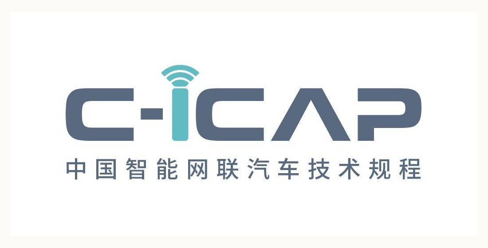
[025] - C-ICAP 2026星级规则:按各单元综合得分率定级——得分率≥92%为5+(★★★★★☆)、≥83%且<92%为5★、≥74%且<83%为4★、≥65%且<74%为3★、≥45%且<65%为2★、<45%为1★。 [025]
- 2026版相对2024修订版的管理规则变化:① 调整星级评价规则;② 智慧座舱和隐私保护单元新增「审核项」,需由企业提供第三方测试报告(测试项之外的合规证据)。 [025]
- 行车辅助(2026版):一级指标调整为高快速场景、城区场景、人机交互;高快速场景新增异形目标物、多目标物、隧道及雨雾复杂环境、收费站及服务区通行;城区场景优化目标物横穿/交叉路口冲突、新增可变车道与潮汐车道;人机交互删除驾驶员状态监测、新增物理按键/系统欺骗/乘员姿态监测。 [025]
- 泊车辅助(2026版):一级指标调整为泊入、泊出、人机交互、室内巡航、室外巡航;泊入删标准尺寸/特殊车位、增夜间及车辆干扰;泊出增电动车干扰;人机交互纳入遥控功能(加分项)、增下蹲儿童目标物;室内巡航增动态行人/车辆干扰;室外巡航增夜间场景及纸箱、石墩等目标物。 [025]
- 智慧座舱(2026版):测评智能交互(语音交互、触控交互、AI语音交互、多屏幕联动、多模态交互)与智能护航(全景环视)等;新增「审核项」需企业提供第三方测试报告。 [025]
- 隐私保护(2026版):一级指标为网联通信守护(车载蓝牙/Wi-Fi/NFC/射频遥控钥匙模糊测试、OTA升级安全、已知漏洞探测)、个人信息守护(车端敏感个人信息、车内视频图像、收集授权)、攻击防御守护(整车深度安全测试、组合驾驶辅助对抗攻击、感知系统对抗、智能语音模型对抗、生成式人工智能安全);新增「审核项」。 [025]
- 乌兹别克斯坦:车辆安全认证(VTA,主管 ATR)依《轮式车辆安全通用技术法规》UzTR.237-016:2017,制动等采 UNECE R13-10/11/13H、外廓尺寸采乌 DST(O'z DSt 2435:2011);环保认证(主管 SCEEP)自2022-01-01起须满足 Euro-4;量产车型式认证有效期3年,SKD/工业模式可提交 UNECE 设计型式认可报告。 [027]
- M1 类乌兹别克斯坦标准清单大量直接引用 ECE 法规(灯光 R1/R8/R20、制动 R13H、安全带 R14/R16、座椅头枕 R17/R25、内外凸出物 R21/R26、EMC R10 等)。 [027]
- 通关'双闸口'本质:报关=货物在中国境内出境申报(出口企业/报关行向中国海关申报,HS 整车归 8703、发动机件 8409、轮胎 4011);清关=抵达中亚后入境准入(本地注册企业向当地海关申报缴税并满足认证/改装要求)。两环节分属两国海关,缺一不可。 [027]
- 中国侧出口报关要件:出口许可证(部分新能源)、VIN 公证(须与铭牌一致)、环保清单、车辆一致性证书、TIR 证(陆运)/中欧班列装载证明;新能源须附电池 UN38.3 报告。霍尔果斯'自驾通关'电子关锁查验≤2小时,中欧班列整车专列'一次查验全程放行'。 [027]
- 中亚侧清关分国差异:哈萨克斯坦须本地注册企业 + EAC 认证 + 俄文技术文件 + e-Decl,高频风险点为 VIN 与认证文件不一致。 [027]
来源推文:对比|车速/里程表法规修订解读 | GB 15082-2026 与 UN 体系|出海易忽略的冷门强制准入认证清单:中亚/东北亚/东欧/北非/小众岛国体系|中国智能网联汽车技术规程 C-ICAP(2026年版):行车辅助/泊体系|中亚各国汽车认证制度 + 报关/清关'双闸口'通关策略解读|中国《智能网联汽车 自动驾驶系统安全要求》强制国标(L3/L4,拟2
⚠ 知识缺口:法规库待补充:C-ICAP 2026、GB 44495 整车信息安全 / GB 44496 软件升级 / GB 44497 自动驾驶数据记录(2026-01-01)、GB《智能网联汽车 自动驾驶系统安全要求》(拟2027-07-01实施)、TR CU 018/2011、TR CU 018/2011 (EAC)、UzTR.237-016:2017
认证制度与体系 整车准入 · 注册监管16 篇
中国
工信部50号令/54号令 缺1篇GB 31241 缺1篇
欧盟
EU 2018/858 库1篇EU 2018/858 第39条(Article 39) 库1篇
UN ECE
UN Regulation No. 95 库2篇UN Regulation No. 66 库1篇UN Regulation No. 94 库1篇
美国
FMVSS 305 库1篇DOT/FMVSS + EPA + CARB 缺1篇
印度
CMVR 缺1篇AIS 007 缺1篇AIS 标准体系 缺1篇IS 标准(BIS) 库1篇AIS 156 缺1篇IS 16893 缺1篇ARAI/CMVR 缺1篇
巴西
CONTRAN 721/2018 缺1篇CONTRAN 749/2018 库1篇INMETRO / LCVM / CAT 缺1篇LCVM/CAT 缺1篇
印度尼西亚
UU 22/2009 库1篇PP 55/2012 库1篇PM 33/2018 库1篇
东盟
ASEAN MRA (APMRA) 库1篇
联合国(运输)
UN 38.3 缺1篇
IEC
IEC 62133 缺1篇
美国/北美
UL 2271 缺1篇UL 2580 缺1篇
哈萨克斯坦
TR CU 018/2011 缺1篇TR CU 018/2011 (EAC) 缺1篇
乌兹别克斯坦
UzTR.237-016:2017 缺2篇
新加坡
VITAS 型式批准 缺1篇
马来西亚
SIRIM/国家型式批准 缺1篇
越南
34/2005 & 35/2005 缺1篇
阿根廷
LCM 缺1篇
智利
3CV 缺1篇
哥伦比亚
SNCA 缺1篇
南非
NRCS LOC / SABS·SANS 缺1篇
泰国
TISI / DLT / ECO Sticker 缺1篇
尼日利亚
SONCAP PC1/PC2/SC 缺1篇
科特迪瓦
CoC + ECTN 缺1篇
日本
TDS/PHP 型式指定 缺1篇
韩国
KMVSS/KC Mark 缺1篇
欧亚经济联盟
EAC 缺1篇
加拿大
CDOT/CMVSS 缺1篇
墨西哥
NOM 缺1篇
GCC
GCC G-MARK 海湾强制认证 缺1篇GSO 422/300/16 证书追溯系统(GCTS) 缺1篇
跨国对照要点18条
- 认证管理流程差异(中国):多部门分管——工信部(企业及产品准入管理办法、50/54/39/44号令公告)、市场监管总局(CCC强制认证,实施规则CNCA-C11-01)、生态环境部(环保信息公开,如GB 18352.6-2016国六排放),环保等检测项目存在重复。 [005]
- 认证管理流程差异(欧盟):各成员国主管部门(德国KBA、荷兰RDW、卢森堡SNCH等)受理认证申请、审核批准并颁发E/e-mark证书;TÜV南德/莱茵等技术服务机构承担认证试验与初次工厂审查。
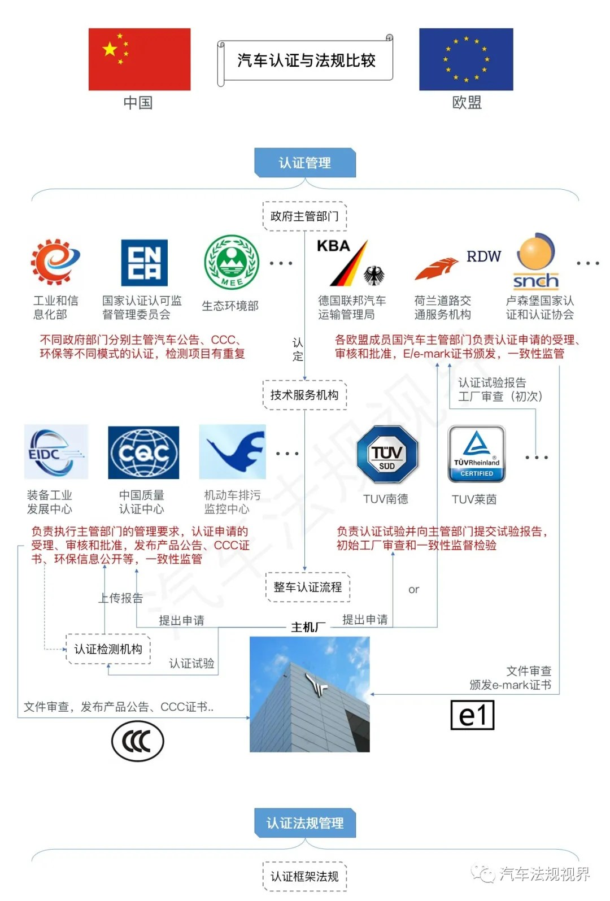
[005] - 标准制定路径(中国):GB/GB-T由全国汽标委(NTCAS)组织起草,经国标委(市场监管总局)或工信部审核发布;中国认证目前引用约100项国标。 [005]
- 标准制定路径(欧盟):立法层为欧洲议会与理事会条例((EU) 2018/858、(EU) 2019/2144),技术法规等效采用UNECE WP.29(1958协定)的ECE法规(UN R1–R160+),整车与零部件另有86项EC/EU指令。
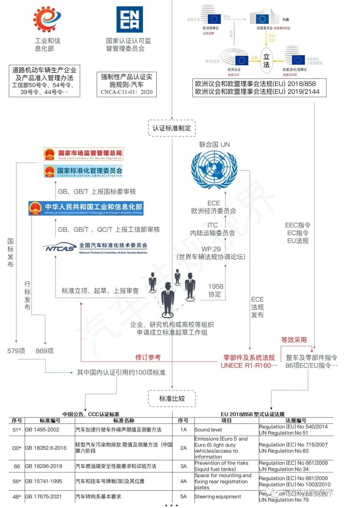
[005] - 技术要求高度相似:中国主被动安全与环保节能国标很大程度参考欧盟ECE法规或EC指令修订(推文附GB↔(EU) 2018/858认证标准对照表:GB 1495↔UN R51噪声、GB 18352.6↔欧5/6排放、GB 17675↔UN R79转向等)。 [005]
- 趋势:中国在新能源、智能网联等新兴领域对国际标准法规制修订的话语权上升。 [005]
- AIS 156(印度):EV电池包强制性安全标准,测试项含热传播、振动、冲击、防水、过充与电气滥用;是印度电动两轮/三轮/四轮车型准入的电池安全门槛。 [022]
- UN 38.3(全球运输):锂电池国际运输强制标准,八项测试为高度模拟、热循环、振动、冲击(T1–T4)、外部短路、挤压/冲击、过充、强制放电;无UN38.3报告无法空运/海运锂电池。 [022]
- IEC 62133:消费电子与工业用可充电锂(及镍系)电池/电池组的国际安全基准,是多国认证(含IS 16893)与CB体系的技术母本。 [022]
- IS 16893 / BIS(印度):对应IEC 62133的印度国家标准,锂电芯与电池组须经BIS强制注册(CRS)方可在印销售。 [022]
- GB 38031(中国):电动汽车动力电池系统安全要求,核心为热扩散(热失控触发后≥5分钟报警)、机械与电气滥用;GB 31241(中国):便携式电子产品用锂离子电池/电池组安全。 [022]
- UL 2271 / UL 2580(北美):UL 2271针对轻型电动车(LEV)电池系统,UL 2580针对电动汽车电池组,北美市场广泛采信,覆盖电、机械、环境与滥用安全。 [022]
- 法规空白:R171出现前欧洲只有基础转向辅助R79,管不了能自动变道/超车的高阶L2(NOA/领航);R171把超出传统辅助边界的功能(B2/C/D/E-ACSF类别)统一纳入技术中立框架。 [037]
- R171核心红线:① 责任不转移——DCAS(驾驶员控制辅助系统)只是「协助」,出事驾驶员仍是第一责任人;② 监控是刚需——系统边界/驾驶员参与度/防滥用/HMI 都写进法规本体,非车企自定。 [037]
- R171 版本时间表:R171.00(原始版,已生效起点);R171.01(新基线,增自主变道E-ACSF、接管请求HOR,2027年9月起新申请可能不再接受00版,现立项须瞄01版);R171.02(草案已提交未生效,仅作架构预埋)。 [037]
- 路径A·R171正门(技术成熟、求全欧无障碍销售):宝马iX3(德国KBA,全球首张R171,高速辅助130km/h Hands-off需视线确认变道);路特斯Eletre(西班牙IDIADA E9,中国首张、R171.01,计划2026-06 OTA高速领航HNP)。 [037]
- 路径B·Article 39侧门(技术不符现行法规时单国临时合法、再求欧盟互认):特斯拉FSD Supervised(荷兰RDW批准,仅荷兰有效,预计2026夏提交欧盟投票);福特BlueCruise(同样一国先行再扩张)。 [037]
- 出海建议:2026-2027全欧卖车,R171.01是必拿硬通货(勿再用00版做设计地板,否则2027后认证失效风险);超R171.01边界的激进功能(如城市NOA)可学特斯拉先用Article 39在一国落地、积累数据反哺R171.02。 [037]
体系背景70条
- 巴西非1958协议/WP29成员，ECE法规无自动法律效力，测试报告须明确满足对应CONTRAN标准。 [019]
- 安全法规以CONTRAN决议为核心但大量借鉴ECE(如CONTRAN 721/2018基于UN R95侧碰)；排放PROCONVE轻型车用美标FTP-75、重型车对标欧标。 [019]
- SENATRAN 990/2022起等效ECE/FMVSS不再被接受除非CONTRAN明确提及；新能源CONTRAN 749/2018认可UN R100/R94/R95或FMVSS 305。 [019]
- 实操：已有欧盟WVTA不能直接用需逐项比对；零部件(轮胎/玻璃/蓄电池)必须做INMETRO认证。 [019]
- CMVR(中央机动车辆法规)1989颁布、1991实施，是母法；其第126条定义型式认可，标准委员会为 CMVR-TSC。 [001]
- AIS(印度汽车工业标准)由 AISC 制定，是 CMVR 的一部分、强制执行；AIS 未涉及的产品(如雨刮片)参照 BIS 发布的 IS 国家标准。 [001]
- ARAI(印度汽车研究协会，浦那)依据 CMVR/AIS/IS 测试整车及零部件并签发型式批准；强制 ISI 部件须先获认证才能申请整车 ARAI。 [001]
- 印度不认可 E-mark，即使已完成 E-mark/CCC 仍需 ARAI 认证；样品必须送印度本地实验室测试。 [001]
- ARAI 证书长期有效但需每1-2年工厂监督检查；新车型式认证理想45工作日(实际4-6月)，费用约8-15万。 [001]
- 印尼型式认证(Uji Tipe)法律依据:UU 22/2009(强制车辆测试)→ PP 55/2012(细化型式认证含实车测试与设计/工程研究)→ PM 33/2018(规范VTA);由交通部Kemenhub与BPLJSKB执行,但路试门槛仍沿用过时的1993年部长令KM 63/1993。 [021]
- 东盟汽车产品互认安排(ASEAN MRA)2022-01-15生效、分阶段实施,首阶段以19项UN法规为统一技术依据;一国指定技术服务(TS)测试认证后可在他国免重复测试,但各成员国仍保留按本国法规独立批准的完整权力。 [021]
- 马来西亚2006年加入1958协定、已采纳100+项UN法规,JPJ为批准机构(指定技术服务),分整车VTA与零部件CTA(CTA须先于整车VTA);UNR66(客车上翻安全)因2007年重大客车事故于2008年率先强制;对产业采用'2+2年'准备过渡期。 [021]
- 泰国2006年加入1958协定但带保留(在另行通知前不受任何UN法规约束,该声明形式上仍有效),实际通过TISI国标de facto采纳20+项(含R94/R95、R102–R112);进口车仍须本地homologation,不完全实施互认。 [021]
- 印尼向UN法规靠拢五步路线图:①修法(修订PP 55/2012)→②建设并认可技术服务TS(达ISO 17025/17020/17021)、在Bekasi新建BPLJSKB试验场做UN-R测试试点→③渐进采纳UN-R(优先东盟MRA清单,聚焦安全与环保)→④加入1958协定→⑤能力建设(人力/设施/标准)。 [021]
- 总纲:主流认证(欧盟WVTA/欧亚EAC/海湾GCC)是基础,但中亚、北非、东欧等非联盟独立区域有国别专属强制认证——均为法定型式认证/专项强制资质(区别于PVOC一次性清关文件),是清关、上牌、销售的硬性门槛,遗漏直接导致货物滞留、项目停滞。 [023]
- 中亚·哈萨克斯坦:作为EAEU成员须满足TR CU 018/2011,取得EAC认证 + OTTC车辆类型批准书方可注册销售;申请必须指定EAEU境内实体作连带责任签约方(车企申报核心卡点)。 [023]
- 中亚·乌兹别克斯坦:完全不认可欧亚EAC,须依本国UzTR.237-016:2017标准独立完成整车全项测试与工厂审核,由UZSTANDART(标准计量与认证署)发证,且证书申请人必须为乌境内注册企业。 [023]
- 中亚·吉尔吉斯斯坦 vs 塔吉克斯坦:吉尔吉斯斯坦属EAEU、通用EAC规则;塔吉克斯坦不属欧亚经济联盟,必须单独办理GOST-TJ国家强制认证。两地测试标准老旧、审核周期漫长,立项阶段须预留充足认证周期。 [023]
- 东北亚·日本:依《道路运输车辆法》搭建型式认定体系,大量引用JIS标准,覆盖整车安全/排放/噪音/EMC全项试验,且所有车型必须完成右舵专属本地化改制——全球最严苛体系之一。 [023]
- 东北亚·韩国:KMVSS整车认证由国土交通省主管、仅本土指定代理申报;关键新规2025-08-14生效,新增Article 18-4网络安全、Article 18-5软件升级两大强制条款,新申报车型必须满足。 [023]
- 东欧·罗马尼亚:欧盟成员,量产车持有效WVTA即可在欧盟自由流通;但非欧盟来源、小批量定制、特种车辆无法直接用WVTA,须在当地完成RAR(汽车登记处)专项技术核验(VIN校验 + 整车技术审查补充备案)。 [023]
- 东欧·塞尔维亚:非欧盟国家,采用独立AAA强制合格评定体系,基准高度对标UNECE但发证机构完全独立,需单独测试与工厂审核;已纳入E/e-mark体系,专属代号E10。(克罗地亚2013年入盟,执行WVTA,不属此独立认证范畴) [023]
- 北非·阿尔及利亚:整车准入为法定强制COC符合性认证,排放不低于欧5,ABS/ESC强制标配;完全拒收GCC/EAC境外报告,必须本地试验取得官方COC,且进口商须为工业部授权的特许经销主体。 [023]
- 北非·突尼斯 & 利比亚:突尼斯实行NT国家标准认证(INNORPI主管,须过PCAP符合性评估程序);利比亚依《第12/2010号法案》执行LNCS强制认证叠加PVOC装船前检验,以UNECE为基础并增加高温沙尘专属试验项;两国均要求整车型式批准叠加年度工厂监督审核。 [023]
- 东南亚·越南:常见误区是以为东盟LCI区域互认可通用,实则越南不认可东盟互认资质,强制本土登检认证(Vietnam Register);法规等效UNECE,但所有试验必须在越南登检局授权实验室完成,严禁套用其他东盟国家数据与证书。 [023]
- 小众岛国:太平洋/加勒比(巴布亚新几内亚NICTA型式认证、牙买加、巴哈马)均为右舵专属市场、对标ADR与GCC、仅当地官方发证(巴新2025-12新规:旧永久证书有效期统一调整至2028-06-10,新证固定三年);新西兰承认澳大利亚ADR为基础准入,但到港后须完成NZTA本地备案登记 + 右舵改装/车辆识别本地化。 [023]
- 新能源专项前置(不能单独作整车准入凭证,却是WVTA/OTTC的前置强制条件,最易被忽视):① ERA-GLONASS俄罗斯紧急呼叫系统认证(EAEU全境,办OTTC的硬性前置,缺失直接阻断OTTC申报);② UN R155/R156网络安全与软件更新(欧盟2022-07新车型、2024-07全部在售强制;英国GB WVTA规划2026-06新构型、2027-02所有整车R155、R156缓冲至2029-07)。 [023]
- 东盟尚无统一汽车准入制度,各国'各自为政':新加坡最完善(2003年起亚洲首个电子化型式批准系统 VITAS);菲律宾对进口实施 ICC 许可认证、对本国实施 PSCS 强制认证(主管 DTI/BPS)。 [026]
- 马来西亚由运输部道路运输司牵头、SIRIM 等组成'国家型式批准委员会',2005-01-01 起所有新车型须经型式试验与批准;印尼依第22/2009号法规,制造商先在工业部(MoI)注册、再向交通部(MoT)申请、送 BPLJSKB 测试取整车型式认证。 [026]
- 越南由交通部(MOT)及下属注册局(VR)管理,执行车辆型式认证(国产依34/2005、进口依35/2005号决定);泰国为 TISI(排放/安全部件)+ 陆地交通部(型式认证)双主管。 [026]
- 左右舵:左舵=菲律宾/越南/老挝/柬埔寨/缅甸;右舵=马来西亚/文莱/印尼/泰国/新加坡。多国限制或禁止超龄二手车进口(印尼/泰国/菲律宾),但对专用车多有豁免。 [026]
- 关税:中国-东盟自贸协定对93%产品0关税,但乘用车/轻商用车被列高度敏感产品长期维持较高关税;一般敏感产品2020-01降至5%以下;专用车与多数零部件降税最快趋0。新加坡为自由港、汽车长期零关税。 [026]
- 乌兹别克斯坦:车辆安全认证(VTA,主管 ATR)依《轮式车辆安全通用技术法规》UzTR.237-016:2017,制动等采 UNECE R13-10/11/13H、外廓尺寸采乌 DST(O'z DSt 2435:2011);环保认证(主管 SCEEP)自2022-01-01起须满足 Euro-4;量产车型式认证有效期3年,SKD/工业模式可提交 UNECE 设计型式认可报告。 [027]
- M1 类乌兹别克斯坦标准清单大量直接引用 ECE 法规(灯光 R1/R8/R20、制动 R13H、安全带 R14/R16、座椅头枕 R17/R25、内外凸出物 R21/R26、EMC R10 等)。 [027]
- 通关'双闸口'本质:报关=货物在中国境内出境申报(出口企业/报关行向中国海关申报,HS 整车归 8703、发动机件 8409、轮胎 4011);清关=抵达中亚后入境准入(本地注册企业向当地海关申报缴税并满足认证/改装要求)。两环节分属两国海关,缺一不可。 [027]
- 中国侧出口报关要件:出口许可证(部分新能源)、VIN 公证(须与铭牌一致)、环保清单、车辆一致性证书、TIR 证(陆运)/中欧班列装载证明;新能源须附电池 UN38.3 报告。霍尔果斯'自驾通关'电子关锁查验≤2小时,中欧班列整车专列'一次查验全程放行'。 [027]
- 中亚侧清关分国差异:哈萨克斯坦须本地注册企业 + EAC 认证 + 俄文技术文件 + e-Decl,高频风险点为 VIN 与认证文件不一致。 [027]
- 巴西(最复杂):INMETRO 主导零部件强制认证(轮胎/刹车片/车灯/安全带/电池,符合 NBR);整车须 IBAMA 颁 LCVM 环保证书 + SENATRAN 颁 CAT 安全证书;INMETRO 走 OCP-003 型式认证(认可实验室测试+巴西差异测试+工厂审核+本地代表);商用汽油掺27%乙醇、柴油掺14%生物柴油,排放测试循环基于美标 FTP。 [028]
- 阿根廷:整车须工业部(MIT)颁 LCM 车型构造许可证;售后零部件 CHAS(非原装)/CAPE(原装)强制认证;经 TAD 在线平台申请(先在 RUMP 登记),西语文件,证书须定期更新维护并接受市场监督。 [028]
- 智利:3CV 认证制度,所有车进入市场前须过安全 + 排放认证;主管运输通讯部(MTT)+ 环境部(MMA);依智利安全法规(如 Decreto 26-2000)与欧六排放。 [028]
- 哥伦比亚:所有机动车须过 SNCA 体系认证取哥伦比亚型式批准证书,安全遵循 UNECE 或 FMVSS、排放对标欧美;获证后须在 RUNT(单一过境处)与 VUCE(外贸单一窗口)登记。 [028]
- 秘鲁:依058号最高法令(国家车辆条例)采型式批准,主管交通通讯部(MTC)+环境部(MINAM)+国家车辆登记总局(DGCT);排放计划自2024-10起升级。 [028]
- 四机构分工:立法=交通部(DoT)+贸工部(DTI/DTIC);核心执行=国家强制性技术规范管理局(NRCS,型式批准/MIBS市场监督/发证);标准=南非国家标准局(SABS,SABS/SANS 系列);实验室认可=SANAS(认可 ISO/IEC 17025 实验室,仅其认可实验室报告被 NRCS 接受)。 [029]
- 整车型式批准六步:①制造商在南非完成 MIB 注册并提交申请→②NRCS 资料审核→③协商样车检验时间/地点(可选国内 SANAS 认可实验室或南非本土)→④实车全项检验与整改→⑤NRCS 发《符合性证书》LOC(有效期3年)→⑥信息录入南非国家交通信息系统 NaTIS 获合法身份。 [029]
- 四大关键要求:测试报告须 SANAS 认可实验室在认可范围内出具;严查实车与文件一致性(杜绝'纸车不符');获证后每年生产一致性抽检,不合格 NRCS 可收回证书;车辆须贴合规符合性铭牌(持证人/认证编号/VIN)。 [029]
- TISI 认证(泰国工业标准所):排放与安全零部件强制标准,燃油车必须做 TISI 排放测试。 [030]
- DLT 整车型式批准(陆路运输部,依《机动车辆法》《陆路运输法》):UN ECE + 泰国本地审核双轨制,申请人必须是泰国本地注册主体(车企/进口商/代理),是销售/上牌/上路的法定准入证。 [030]
- ECO Sticker 节能标签:所有在泰销售摩托车与轻型车(含 BEV/HEV/PHEV)必须申领,提交测试报告→审核→核发→贴前挡风玻璃;直接决定税率优惠与补贴额度。 [030]
- 完整流程:UN ECE 整车安全认证 → TISI 排放(BEV 免)→ DLT 型式批准 → ECO Sticker → 清关缴税上牌。 [030]
- BEV 特殊:豁免 TISI 排放测试(周期更短),仍需 ECE 安全 + DLT + ECO Sticker;泰国为右舵,左舵车须合规改装方可上牌。 [030]
- CoC + 货物跟踪单国别:阿尔及利亚(CoC);布隆迪/南苏丹/加蓬(CoC+ECTN);科特迪瓦(新车CoC+ECTN,二手自愿);埃及(新车CoC+ACID,禁二手燃油);喀麦隆(CoC+ECTN);刚果金(VC+FERI+COD/AD);刚果布(CoC+URN);利比亚(CoI,需信用证);尼日利亚(PC1/PC2+SC,ICTN非必须)。 [031]
- 排放/车龄/左舵:利比亚(左舵,欧5,主流口岸已欧6,乘用车≤3年)、科特迪瓦(左舵,欧4+,乘用车≤5年)、突尼斯(左舵,欧3+,≤5年)、摩洛哥(左舵,欧6,≤5年)、尼日利亚(左舵,欧4+,禁>12年/2026)、加纳(左舵,欧2+,≤10年,超龄CIF罚款)、多哥(左舵,国Ⅳ+,私车≤5年)、加蓬(左舵,欧4+,≤10年)、埃塞俄比亚(左舵,禁纯燃油与右舵)。 [031]
- 税费(差异极大):科特迪瓦关税35%+增值税18%+附加2.6%;加蓬/多哥关税30%+增值税18%;尼日利亚关税20%+VAT7.5%+进口调整税+回收基金;加纳关税5–20%(按排量)+VAT15%+多项基金;利比亚关税5–8%且免进口增值税;突尼斯燃油关税15%、消费税最高277%。 [031]
- 新能源优惠:多哥(2026起纯电/混动整车及电池100%关税减免、免增值税与国家团结税)、埃塞俄比亚(纯电0关税仅缴15%VAT)、埃及(电动免关税仅14%VAT;燃油1.6L以下40%/1.6–2L 100%/>2L 135%)、科特迪瓦(合规混动可申零关税)。 [031]
- 右舵市场(非洲)南非/肯尼亚/坦桑尼亚/津巴布韦/乌干达:坦桑/肯尼亚门槛高、关税重;南非市场大但关税有变动。 [031]
- 日本:型式指定制度——TDS(型式指定)、共通构造部型式指定、PHP(进口车特别对应制度,仅适用单一车型年销<5000辆);法规母法《道路运输车辆法》《保安基准》《大气污染防治法》,国土交通省监管,整车与部件均需型式指定。 [035]
- 韩国:强制性认证(环保/能耗)+ 自我认证(KMVSS 安全),分由 MOLIT/MOE/MOTIE 监管;电动车另需 MOE 补贴测试方可获补贴;售后备件除 KMVSS 自我认证打 KC 标识外,部分件需工业部 KC 认证,车载无线设备需 RRA 的 KC 无线电认证。 [035]
- 印度:ARAI(印度汽车研究协会)依 CMVR 对安全零部件做符合性测试与型式认证(工厂审核+型式认证+生产一致性);CMVR 整车强制范围覆盖两/三轮、M1/N1、M2/M3/N2/N3、工程车、拖拉机、电动车 BOV 等,数十类安全零部件须单独认证。 [035]
- 欧亚联盟:EAC 认证(欧亚一致性)覆盖俄/白/哈/亚/吉五国,贴 EAC 标志即海关联盟内自由流通;EAEU 已发66条技术法规(48条生效),成员国互认认证机构与实验室、EAC 证书全联盟有效。 [035]
- 印度尼西亚:整车型式认证由交通部+工业部共同监管(依第22/2009号法规),送 VTCC 检验合格发型式批准证书;零部件须 SNI 国家标准强制认证(安全玻璃/轮胎/轮辋等)。 [035]
- 美国:DOT(1968起,厂家自我检验申报符合 FMVSS、政府事后监督,涉安全/节能/防盗,NHTSA 管)+ EPA(依《清洁空气法》,环保,具自我认证要素);加州另有 CARB 强制(全球最严环保,出口加州须单独 CARB E.O.,资料同寄 EPA 与 CARB)。 [036]
- 加拿大:CDOT(交通部 TC,类似 DOT),以 CMVSS 为基础,比 FMVSS 更广(整车增噪音、日间行车灯测试);MVTC 试验中心由 PMG Technologies 运营,为境内唯一法规认证试验机构。 [036]
- 墨西哥:NOM 强制认证(NMX 为非强制推荐标准),不认可他国证书、只认本国 NOM;经济部主管,2015 起新安规 NOM-3-SCFI-2014 将部分 NMX 转强制。 [036]
- 巴西:环保部(IBAMA)+交通部(DENATRAN)主管,授权机构 CETESB/INMETRO 测试;整车须 LCVM(排放+噪音)+ CAT(安全,须在国家车辆登记处注册)证书方可上市。 [036]
- 趋势:巴西轻型车排放由 L6 升 L7(2022-01)、L8(2027-01),中重型 P7→P8 并分阶段加严噪声(2023/2027/2033);各区普遍强化排放、有害物质限量与废弃物回收要求。 [036]
- GCC=Gulf Cooperation Council(1981-05-25 阿布扎比成立、总秘书处利雅得),成员国 7:沙特、科威特、阿联酋、卡塔尔、阿曼、巴林、也门。G-MARK 是海湾进口商品强制市场准入证,确保符合安全/环保/质量标准。 [053]
- GCTS(GSO Conformity Tracking Symbol):GSO 2016-06-26 发第 422/300/16 号通告,2016-07-01 起产品须经指定认证机构合格评定并在证书系统注册,获唯一可追溯的『GCC 标志+二维码』合格标识(含认证机构编码),加贴产品本体/铭牌/标签(铭牌、彩盒强制),最小尺寸≥5mm、须清晰可见。 [053]
- 周期与有效期:2-3 工作日出二维码、约 2 周出证;证书有效期 3 年(玩具类 5 年);到期可续证(二维码不变)或重新申请(换新二维码)。 [053]
- 申请资料:安规报告+EMC 报告(须 3 年内现行最新标准)、包材、爆炸图/电路图/物料清单、插头报告与图片、商标注册证、营业执照等。 [053]
- 注意:GCC 具唯一性(每份的商标/产品/型号唯一)、一份安规对应一份 GCC;须核电压/频率符合目的国;申请时须选目标国,未选则无法进口到该国以外的其他海湾国家。 [053]
来源推文:对比|中欧汽车认证与法规比较体系|巴西认证为何混合联合国、美国法规？ECE、UN R、CONTRAN与体系|印度汽车准入认证要求概述：CMVR/AIS/IS 与 ARAI/BI体系|印尼车辆型式认证(VTA)体系及向UN法规靠拢路线图｜GIIAS 2对比|全球电池认证标准速览:印度/中国/北美/国际六大锂电池安全合规标准｜体系|出海易忽略的冷门强制准入认证清单:中亚/东北亚/东欧/北非/小众岛国体系|东盟十国汽车准入政策:型式批准走向 + 各国认证 + 0关税进程体系|中亚各国汽车认证制度 + 报关/清关'双闸口'通关策略体系|南美市场准入认证制度:巴西/阿根廷/智利/哥伦比亚/秘鲁体系|南非汽车认证:NRCS 型式批准六步 + SABS/SANAS 闭环体系|泰国汽车出口认证:TISI + DLT + ECO Sticker 体系|非洲各国汽车进口政策与 CoC/ECTN:左舵国合辑体系|全球32国/联盟车辆准入许可概览(亚/欧/北美/南美/中东/大洋洲/体系|七大海外市场24国准入政策与趋势:北美/南美/欧盟/欧亚/中东/东盟对比|欧洲高阶智驾「通关」指南:R171是正门,第39条是VIP快速通道体系|海湾 GCC / G-MARK 认证体系 + GCTS 追溯标识
⚠ 知识缺口:法规库待补充:34/2005 & 35/2005、3CV、AIS 007、AIS 156、AIS 标准体系、ARAI/CMVR、CDOT/CMVSS、CMVR、CONTRAN 721/2018、CoC + ECTN、DOT/FMVSS + EPA + CARB、EAC、GB 31241、GCC G-MARK 海湾强制认证、GSO 422/300/16 证书追溯系统(GCTS)、IEC 62133、INMETRO / LCVM / CAT、IS 16893、KMVSS/KC Mark、LCM、LCVM/CAT、NOM、NRCS LOC / SABS·SANS、SIRIM/国家型式批准、SNCA、SONCAP PC1/PC2/SC、TDS/PHP 型式指定、TISI / DLT / ECO Sticker、TR CU 018/2011、TR CU 018/2011 (EAC)、UL 2271、UL 2580、UN 38.3、UzTR.237-016:2017、VITAS 型式批准、工信部50号令/54号令
产业与贸易政策 环保全链条 · EV补贴5 篇
欧盟
工业加速法案(提案) 缺1篇
泰国
TISI / DLT / ECO Sticker 缺1篇
玻利维亚
第5142号最高法令 缺1篇
萨尔瓦多
Ley Fomento Importación Vehículos Eléctricos/Híbridos (Decreto 465/738) 缺1篇
版本演变要点3条
条文解读要点9条
- 欧盟《工业加速法案》提案2026-03-04公布,目标2035年制造业占欧盟GDP升至20%;含四部分:加快工业项目许可、公共采购/补贴中的低碳与原产地要求、新兴战略项目外资条件、成员国工业制造加速区。 [009]
- 钢铝低碳要求:法案要求自2029-01-01起机动车用钢总体积≥25%为低碳产品,铝总体积≥25%为低碳且原产于欧盟。 [009]
- 公共采购电动车欧盟原产地要求(法案生效6个月后采购的BEV/PHEV/FCV):(a)欧盟境内组装;(b)零部件(除电池)出厂价≥70%欧盟原产;(c)/(d)动力电池至少含3/5种主要组件(含欧盟产电芯、正极活性材料、BMS);(e)电驱部件出厂价≥50%欧盟原产;(f)主要电子系统≥50%。其中(d)(e)(f)自生效3年后适用;M1E小型电动车只需(a)加(b)(c)其一;上年欧盟原产占比≥85%的制造商整体视同合规12个月。 [009]
- 外资条件:法案将电池技术、BEV/PHEV/FCV制造、光伏、关键原材料列为新兴战略制造业;原籍国占全球产能>40%的投资者超1亿欧元投资须满足至少四项——股权/投票权≤49%、与欧盟实体合资且控制权≤49%、向欧盟目标企业许可知识产权与专有技术、年研发支出≥目标企业年收入1%、雇员≥50%为欧盟人口、零部件≥30%欧盟采购。 [009]
- 加速区:各成员国须在法案生效12个月内指定至少1个工业制造加速区,集聚能源密集型、汽车工业、净零技术等战略项目,区内项目仅需少量额外许可。 [009]
- 立法目的:以公共政策促进公共与私营部门使用电动/混动运输工具,通过财政激励促进此类车辆、零部件及相关配件的进口(Art.1)。 [043]
- 覆盖范围:新车与二手电动车进口的财政激励;以及电动车充电站/充电中心基础设施的建设与推广。 [043]
- 改革:Decreto 465 与 Decreto Legislativo Nº738 对该法进行修订(本批含官方原文)。 [043]
- 属萨尔瓦多车辆准入/进口法源体系的『清洁能源激励』组成,与进口估值法 Decreto 383、陆路运输与交通法、RTS 技术标准并列。 [043]
体系背景8条
- TISI 认证(泰国工业标准所):排放与安全零部件强制标准,燃油车必须做 TISI 排放测试。 [030]
- DLT 整车型式批准(陆路运输部,依《机动车辆法》《陆路运输法》):UN ECE + 泰国本地审核双轨制,申请人必须是泰国本地注册主体(车企/进口商/代理),是销售/上牌/上路的法定准入证。 [030]
- ECO Sticker 节能标签:所有在泰销售摩托车与轻型车(含 BEV/HEV/PHEV)必须申领,提交测试报告→审核→核发→贴前挡风玻璃;直接决定税率优惠与补贴额度。 [030]
- 完整流程:UN ECE 整车安全认证 → TISI 排放(BEV 免)→ DLT 型式批准 → ECO Sticker → 清关缴税上牌。 [030]
- BEV 特殊:豁免 TISI 排放测试(周期更短),仍需 ECE 安全 + DLT + ECO Sticker;泰国为右舵,左舵车须合规改装方可上牌。 [030]
- FTA 全车型(燃油+新能源)0税国家:智利(中智)、秘鲁(中秘)、澳大利亚(中澳)、新西兰(中新)、新加坡(中新建/RCEP)、塞尔维亚(中塞,逐步降0)、哥斯达黎加(中哥)、冰岛/瑞士/列支敦士登(中国-EFTA)、格鲁吉亚(中格)、厄瓜多尔(中厄,逐步降0)、尼加拉瓜(中尼,逐步降0)、日本(RCEP 框架对日出口整车已0)、柬埔寨(RCEP/中柬,部分立即0)。 [032]
- 目标国单边新能源(BEV/PHEV)0税:柬埔寨(2026-04起纯电乘用车35%→0%、插混→7%)、埃及(纯电整车0、燃油高税)、埃塞俄比亚(纯电0、燃油禁限或高税)、乌兹别克斯坦(新能源进口0)、阿根廷(FOB≤1.6万美元电动车0,有配额/价格上限)、泰国(电动乘用车长期0或极低关税)。 [032]
- 重要提醒:0关税通常仅指关税,进口国增值税、消费税等仍正常征收;整车通常须满足严格原产地规则(如区域价值成分 RVC≥40%)方可享惠。 [032]
来源推文:解读|欧盟工业加速法案速读：强制技术转让、25%低碳钢铝及70%本地零部件体系|泰国汽车出口认证:TISI + DLT + ECO Sticker 体系|出海整车 0 关税国家名单:FTA 全车型 + 新能源单边免税修订|玻利维亚规范新能源进口:第5142号令打击'假混动'解读|萨尔瓦多电动/混动车进口激励法(Decreto 465/738 改革
⚠ 知识缺口:法规库待补充:Ley Fomento Importación Vehículos Eléctricos/Híbridos (Decreto 465/738)、TISI / DLT / ECO Sticker、工业加速法案(提案)、第5142号最高法令; 暂无中国侧解读/对照
未归类 14 篇
以下推文未命中任何主题关键词——在 build_knowledge.py 的 THEME_MAP 增加主题或关键词后重跑即可归位:
- 多米尼加(República Dominicana)车辆进口准入与关税要点 (体系)
- 萨尔瓦多机动车进口估值与海关(Decreto Legislativo Nº383·官方现行) (解读)
- 老挝《陆路运输法》2021——车辆进口·技术许可·测试·注册框架(官方) (解读)
- ASEAN 汽车产品型式批准互认协议(MRA 2021)——老挝/东盟互认依据 (体系)
- 多米尼加车辆准入官方法源体系(交通法63-17 / EV激励103-13 / 估值 / 环保) (体系)
- (EU) 2019/1020 市场监管条例(MSR):整车/零部件出海『投放市场后』合规框架 (体系)
- EAEU OTTC 认证与准入:发证/生产时序规则 + CBU/KD 出口差异(TR CU 018/2011) (体系)
- 科索沃车辆准入官方法源体系:Law 05/L-132《车辆法》(转置欧盟2007/46)+ 中央登记 + 环保/消费税 (体系)
- 塔吉克斯坦车辆准入与电动车政策:GOST-TJ强制认证 + 登记决议№441 + 电动车10年免税 (体系)
- 澳大利亚 ADR 81/03 能耗标签新规:NEDC→WLTP + CO₂/NVES 申报(对比 81/02) (修订)
- UN R83 全版本演进解析:R83.00→.08 对标 Euro 1→6e,R83.09 承载 Euro 7 (修订)
- 俄罗斯轮胎 ECO 认证 + PAHs 多环芳烃环保税(2026-01 落地) (体系)
- 沙特 Saber 认证(SASO 在线清关 COC 系统) (体系)
- 菲律宾 PS 认证(Philippine Standard,BPS 强制产品认证)+ ICC 区别、PCIMS 七步流程 (体系)